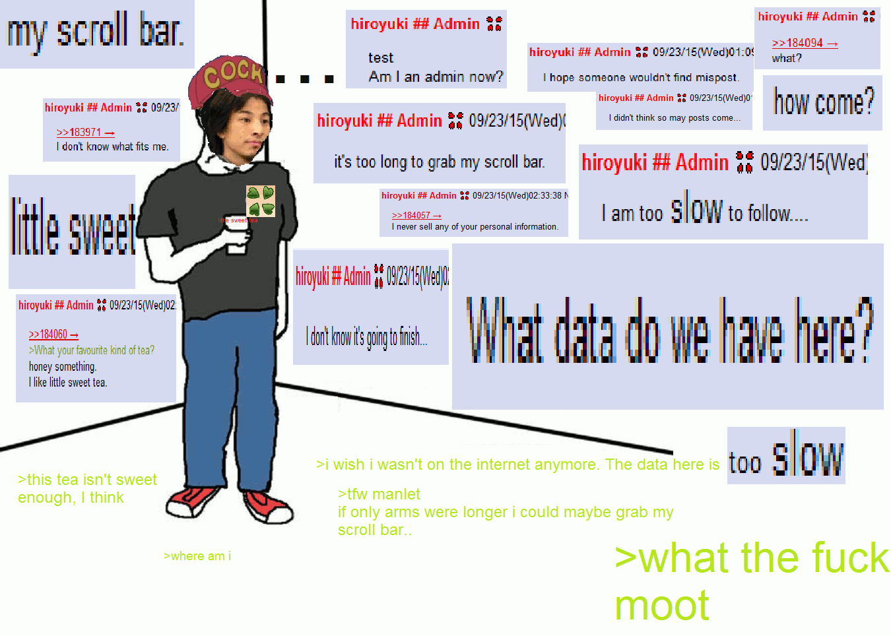
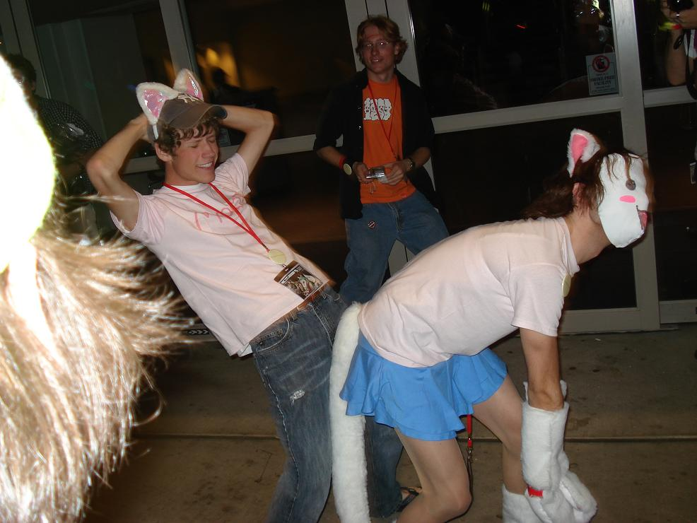
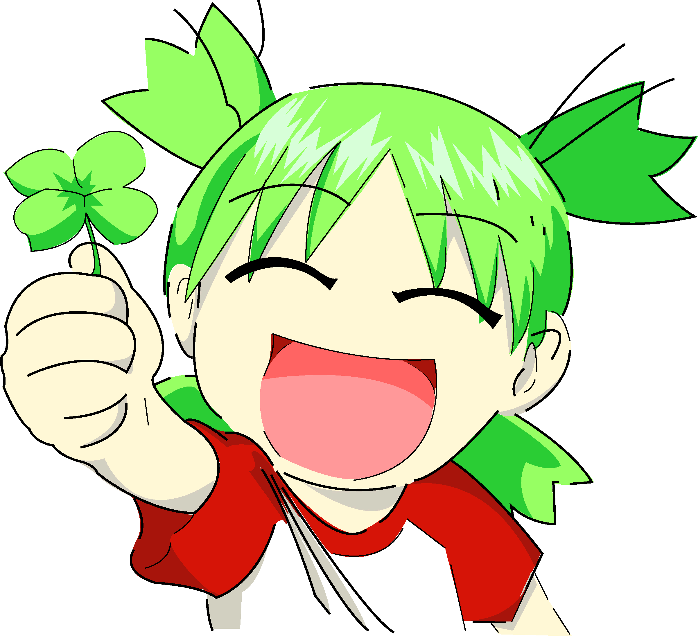

4chan: A Song of Kek and Cringe
The history of a community is most often the history of its language and the turns of phrase developed therein. The ability to natively understand what one is talking about without consulting outside sources is the ability to communicate, persuade, and assert influence on a group of people which you otherwise would have no power over due to your failures to know even the basics of the culture you seek to involve yourself in. Language is not just transmission of information, but also expressions of respect, hatred, reverence, and documentation of the people and events which have shaped the community to that point. In this respect, understanding the particular cant which a website embroils itself in is to understand the history and development of that website as a series of evolutionary steps which dictate how it operates to this day.
My first desires for this article was to act as a chronology of 4chan’s history through its most notable incidents, as I did prior with “Tumblr: A Stupid Written Oral History”. I immediately found myself confronted with an ever-increasing array of terminology, memes, and in-jokes which are incomprehensible to anyone outside its culture. I immediately set to work on making a glossary, but as the terms grew and grew and became more and more specific to the particular subcultures that 4chan exhibits on its 76 boards, the effort of cataloguing even the cursory meanings of 4chan’s most used phrases grew as a tumour on the initial project which could not be excised without losing the historical context for why they exist now. Indeed, the tumour had overrun the desire to make a history of 4chan, for when I wrote down the meanings and stories which developed these terms, they became history in themselves, and contributed more to learning about 4chan than a mere collection of events ever would.
I wrote this article on the whims of fellow Neocities user “lolwut”, whose name is itself a dead 4chan meme. They wrote on my site page: “The Tumblr article was a good read, despite the fact that I have never once maintained an account there, never used the site, and, admittedly, hold the typical 4channer’s perspective of it and hence view it with some negativity. Do you have a similarly long history with 4chan? I would be very interested to hear your thoughts on that site’s history”. I replied: “Yes, for better and for worse. I appreciate you asking me this question because it inspires me to create an article I otherwise would not have”. 20 days and 25,000 words later, I admit I have been trolled. I didn’t even write the original requested topic. If this was an English classroom, I would be praised for my inventiveness but failed on the condition that I didn’t write about what I was supposed to. Also for all the racial slurs.
So here’s my stupid 4chan history.
Froge’s stupid 4chan history
I joined 4chan as an underaged teenager, the exact age I don’t know but it was around thirteen. I did so out of a reverence for Internet memes discovered through Know Your Meme, the Cheezburger Network, and 9GAG, which should tell you the average demographics of those websites. It was 2010, and as I had no personal computer until a few years later, I browsed these sites through my Nintendo DSi and Nintendo Wii internet browsers, forcing me to follow the perpetual advice of “lurk moar” since I was unable to contribute anything meaningful to 4chan. Like most stupid teenagers, I grew fond of edgy humour and what we now know as “dank memes”, browsing Encyclopedia Dramatica and various other splinter sites and absorbing the meme culture through there. Through some combination of cunning and blind luck, I kept these activities a secret from my parents for the entirety of my childhood. I maintained my normalcy in school activities using the mindset that the Internet was merely a bit of unclean fun that I would be punished for participating in, and I was not radicalised into any extremist mindsets as so many other teenagers were.
In hindsight, my minimal participation on 4chan combined with my inability to understand anything outside my niche interests of Nintendo games and comic books led me to miss out on the golden age of 4chan culture outside browsing the outpouring of memes and screencaps on other websites. Even the 2011 My Little Pony wars mostly passed me by, and though my development into a brony would permanently shape my philosophy and activities to this day, I only saw the efforts of anonymous pony spammers from the sidelines as I engrossed myself in pretty pony princesses and the nascent, undeveloped culture that was being created at that time. Although 4chan became an instant obsession for some, amplifying their existing interests to an unhealthy degree, I was unfortunately a normal, autistic child with only a mild fascination with the weirdest outpouring of Internet culture, and browsing /mlp/ and /b/ was merely one hobby among many I had at the time, where I preferred reading, watching cartoons, and playing video games more than I did getting angry at the Internet.
I would eventually grow bored with 4chan, alienated with my inability to impact it and preference for viewing its content elsewhere, and I found a new home with Tumblr in the middle of 2012. The development of Internet-altering events that started out on 4chan, such as the Gamergate harassment campaign, the popularity of the newly-founded 8chan, and the extremist groups formed during the 2016 United States election, all passed me by as I took up residence in the comforting blue walls of the spooky scary SJW safe space. As of 2020, Tumblr is dying due to the administration’s decision to ban pornography, whereas 4chan continues to thrive due to the endless amounts of pornography within. It seems that cooming is my life’s greatest purpose.
Over the past few years, I have continued to browse 4chan on-and-off, finding myself embroiled in episodes of begging for (You)s, harvesting furry porn, and viewing the occasional outpouring of grief over whatever controversy the boards feel the need to bring to the forefront. The website remains cancer, as it always has been, though the cancer has aggressively evolved through the past three years in particular. The current zeitgeist of spamming Reddit-tier Wojak memes and derailing every topic that doesn’t pander to right-wing interests has turned the website into an even greater shithole than it usually is, and the current COVID-19 pandemic has increased the number of schizophrenics and conspiracy theorists significantly, throwing the current website into a cultural whirlpool where trolls and rightists derail legitimate discussion for the lulz, and where oldfags and otaku want to improve 4chan’s moderation and free it of the newfag menace. The community is in a tumultuous time, though still more peaceful than in earlier years, and we can expect the 2020s to bring forth even greater peace as the world slowly grows older, and slowly grows better.
A brief chronology of 4chan history
To categorise 4chan’s eras, I would suggest it as follows: Before 2003 was the Prehistoric Era, 2003-2005 was the Ancient Era, 2006-2008 was the Classical Era, 2009-2010 was Late Antiquity, 2011 was The Great Pony War, 2012-2014 was the Middle Ages, 2015-2016 was The Rebirth, and 2017-2020 is currently the Industrial Era. These eras are based on the rough sequence depicted in the game “Civilization V”, with the historical stereotypes associated. Here’s my explanation of each era:
Pre-2003 — Prehistoric Era
A state of civilisation from which records are scarce and history is recorded through hearsay. Back when 4chan was just a glimmer in its creator’s eye, there existed the prior Japanese imageboards “2channel” and “Futaba Channel”. Otaku culture had existed for around three decades at this point, and its popularity led to the meme fountain forums “Something Awful” to create a subforum titled the “Anime Death Tentacle Rape Whorehouse”. On September 29 2003, a denizen of this forum named “moot” registered “4chan.net” as a domain squat for Futaba Channel’s similar URL “2chan.net”. Originally a plot to own an @4chan.net e-mail address, two days later he announces the creation of an English-language imageboard at that domain, yelling out “brace for faggotry”, and the Something Awful denizens populate it from there. The very first board created is /b/, at the time known as “Anime/Random”, and 4chan receives one million hits within a week as various other boards are created and become filled with content. The rest, as they say, is history.
2003-2005 — Ancient Era
A civilisation’s most primitive and incoherent state of development. Assuming they are not immediately destroyed by rival tribes, this represents the foundational cultural tenets and rules of law which the community chooses to abide by. Users who posted during this time are known as “originalfags”, largely dead and forgotten. Boards are constantly made and deleted, 4chan moves from 4chan.net to 4chan.org, the website still struggles to pay its server bills, ancient memes such as pedobear, sageman, and the word “/b/tard” are invented, and 4chan is in a constant state of being alive-and-dead as legal threads from its hosting providers combined with moot paying the bills out of pocket shuts the site down for regular periods of time. The culture of anonymity and expressing culture through memes take root during this time, with moot and the since-disgraced admin “W.T. Snacks” existing as the only figureheads of the site, with little formal development of 4chan’s identity until its classical period soon to come.
2006-2008 — Classical Era
A civilisation’s truest expression of self, the classical era sets in stone the ideals and events that will come to define it for the rest of its existence. What is now known as “classic 4chan” exists during this time, becoming a fountain of memes that went on to influence the rest of the Internet forever, such as rage comics, rickrolling, the Rules of the Internet (including rule 34), the concept of lulz, and perhaps the single most important meme to ever exist: lolcats. With the personification of anonymous as a mysterious, green-skinned man in a suit and tie, 4chan finally had a coherent identity, and combine that with moot sorting out the site’s earliest technical problems and constant state of flux, it was the beginning of a series of legendary trolling events which would cement the site’s reputation as a bastion of scum and lulz. The Habbo Hotel raids, Sarah Palin e-mail hacks, Project Chanology, and various other small-time raids against rival sites gave 4chan attention from mainstream news sources who had no idea what to make of this new frontier of Internet vigilantism. The site produced the largest cultural output it would manage for over a decade, and when uninformed normies think of “4chan”, this is the period they think of.
2009-2010 — Late Antiquity
The golden days of a civilisation loses some of its lustre, but idealism is still alive in the hearts of its citizens. A time of continued trolling and outpouring of popular, though less-influential memes, 4chan remained Public Enemy Number One for most of the Web, still being seen as a fearsome force to be reckoned with should anyone cross them. This era is defined by workmanlike raids on various targets using pragmatic, though less-creative techniques like DDOSing websites, mass-uploading porn videos to YouTube, rigging a Gamespot character popularity poll and thereafter becoming enemies, and putting racial slurs on Google Trends. This falls against the background of a year-long civil war titled the “Boxxy saga”, where the camgirl Boxxy was discovered at the start of 2009, creating two factions of anons who were either in favour of or against her, leading to numerous intra-board raids and hacking attempts on 4chan itself. Memes such as Dubs Guy, Nofap November, the forced meme “holeguy”, various rage comic characters, and the very earliest incarnations of Pepe the Frog were invented during this time, though most of 4chan’s memes remained isolated within its walls. It was a time for the aging userbase to mature, and as it found its collective hatred waning over the years, the circumstances were right for a cultural shift, leading to an event that would alter 4chan forever.
2011 — The Great Pony War
It was October 10, 2010. A humble series from the brainchild of popular cartoonist Lauren Faust, “My Little Pony: Friendship is Magic” aired its first episode on The Hub network. In its first week, it gained little attention apart from a few posters in a thread on /co/ — the comics and cartoons board — populated by the same small group of anons who enjoy watching cartoons for young children. If the story ended here, Friendship is Magic would most likely gain a small fandom of onlookers within /co/ disconnected from the rest of 4chan, and it would fizzle out like so many cartoons have, and continue to do in the decade after its release. But then, on October 19, 2010, Cartoon Brew published an article: “The End of the Creator-Driven Era in TV Animation”.
War was declared.
These days, the article reads more like a parody in the genre of “it will never catch on”, so wholly wrong were its predictions about the animation industry to come. But when it was first published, /co/ took umbrage at its alarmist tone, especially for attacking their beloved Faust. The second Friendship is Magic episode aired three days later, and otherwise uninterested /co/mrades flocked to see what all the fuss was about. They were charmed by the pretty pastel ponies they found within, and with the power of autism and memes, began to proselyte the good book of Equestria on /b/, with pony threads becoming a constant feature on both boards. The term “brony” was coined soon after, and the fandom remained well-behaved and manageable by 4chan’s moderators until February 2011, where increasing interest in the series led to the userbase to consider the fanbase as cancer, leading to moderators all across 4chan banning pony threads on the basis they generated “no actual content other than reaction images”. The bronies revolted, and united under the power of friendship, they led the site into a year-long civil war in which they evaded their endless bans in ten seconds flat, bolstered by garrisons from the forward-operating-base Ponychan.
The candy-coated cancer would eventually be contained with moot’s creation of the /mlp/ board in February 2012 and the institution of Global Rule 15, which bans all pony content outside of /mlp/. The war was over, but the repercussions would define 4chan for years to come. As the first war where 4chan’s moderators were unable to snuff out opposition, this emboldened moderators for future efforts, causing them to be much more stringent on what content was allowed on what boards, lest there be another invasion like My Little Pony. Whenever a cartoon for children became popular on /co/, anons would panic and call it “the next MLP”, when it clearly never would be. 4chan’s creation of bronies is a fact it has managed to smother over the decade, keeping some semblance of its evil reputation intact. Even so, My Little Pony: Friendship is Magic became the single most important cartoon series of the 2010s, and this original sin still haunts oldfag anons to this day — much to the glee of those brave original /b/ronies who fought the law… and won.
2012-2014 — The Middle Ages
A time of a civilisation’s technological and cultural stagnation, this period is marked by an unpleasant state of affairs kept alive out of inertia, though not dire enough to be marked as a “dark age”. The loss against the brony menace depressed the hell out of the userbase, and combined with the mainstream media shining attention on Anonymous due to Operation Wall Street, there was a pervasive sense 4chan was losing its original identity and capitulating to a new generation of normies. The creation of 8chan in 2013 further put a damper on spirits, being a barnacle hanging off 4chan’s collective consciousness, holding out hope for a theoretical “4chan 2.0”. Anons attempted to cheer themselves up with continued trolling efforts, such as The Fappening, Gamergate, and rigging various popularity polls, with moot taking a renewed interest in communicating with — and messing with — the users. Several popular boards were created, including the notorious [s4s], and new memes during this time included baneposting (for you), the lenny face ( ͡° ͜ʖ ͡°) , the personification of janitors as Mr. Morris from Arthur, and the very first Wojak and Pepe variations. Overall, it was a time of peace, with the most notorious events happening at the end of 2014, fizzling out on 4chan and migrating to 8chan instead.
2015-2016 — The Rebirth
On January 21, 2015, moot announced his retirement from 4chan. By far the most shocking event to ever grace the website, this announcement rocked the userbase to its core and gave rise to the first legitimate fear that 4chan would finally die. The revellers at 8chan celebrated, and moot created the /qa/ board to coincide with an eight-hour YouTube livestream to answer user questions. Several months later, on September 22, 2015, 4chan was purchased by Hiroyuki Nishimura, the founder of 2channel. Due to a series of gaffes during his introductory threads, he immediately became known as autistic and naïve, and it was clear he would never be as respected as moot was. The first board made under his leadership was /trash/, which immediately became a furry pornography board, signalling the acceptance of a subculture which was once upon a time universally reviled by 4chan. Despite the change in leadership and various sabre rattlings by 8chan, this period was also peaceful, with the upcoming United States presidential election being meme’d in good spirits rather than out of hatred. It was clear that Donald Trump was never going to win the election, and so the majority of the userbase remained apolitical, deciding to spend their time crafting greentext stories and living the comfy NEET life instead of worrying about any potential harm.
Then Trump won the election.
2017-2020 — The Industrial Era
After enough time passes, a civilisation casts out its prior idealistic identity in favour of developing a new one, using the possibilities of modern technology and rapid production to create an image based around modern pragmatism rather than historical myths. moot’s resignation signalled the death of old 4chan, and hiromoot’s leadership became the birth of a new 4chan, using the same layout and boards, but with a vastly different userbase. With the election of Donald Trump, hordes of /pol/lacks freed themselves from their containment board and rode off into the rest of 4chan to gloat at how their fascist ideology finally took root in the United States, laughing at those foolish bleeding-heart liberals who never thought they would be seriously challenged. Hordes of tourists, emboldened by the rising alt-right movements on 8chan and Reddit, aligned with the /pol/ barbarians, embroiling 4chan in a cultural cold war that has yet to see a resolution to this day.
The hostilities are novel in that /pol/ and its sympathetic ally boards, like /his/, /int/, and /bant/, did not outright challenge the moderation, but instead embraced guerrilla tactics that allowed them to spread their propaganda by concern trolling threads under the guise of legitimate discussion, staying within 4chan’s rules without being punished for derailing conversation that didn’t strictly adhere to the alt-right’s incomprehensible ideals. Concerns about “social justice warriors”, the “regressive left”, and the existence of transgender people took over any thread that even remotely resembled a topic which hurt the feelings of the cult of /pol/. Conspiracy theories and incel ideology dominated 4chan during this period of time, with /pol/’s allies rapidly gaining ground in a war of attrition that sought to purge 4chan of leftists, with left-of-center holdout boards like /co/, /trash/, and /mlp/ successfully defending against conversion due to the unity of their users and their ability to abrade out-of-towners. Boards like /b/ and /r9k/ became battlegrounds for fascist supremacy, and what few boards became free of warfare were too small to be worth fighting over.
The outpouring of normies attracted to /pol/ led to the necessity of manufactured memes for individuals who needed to rapidly blend in with 4chan culture rather than contributing to it through time and effort. /pol/ rallied itself under manufactured controversy and conspiracy theories such as “QAnon”, “Pizzagate”, and an effort to include pedophilia under the LGBT flag. In a similar vein as Anonymous before them, they organised identities based around the fictional Kekistan community, with their collective identity taking the form of various Pepe and Wojak variations which grew ever more complex and grotesque as the years went on. As this culture war remained inescapable over the past three years, users regressed in their creation of memes, churning out pragmatic variations of the same few memes over and over again — much like a factory rather than a genuine cultural expression.
This industrial period was defined by the omnipresence of Pepe incarnations and “oomer” Wojak characters which were used to stereotype and discredit whoever the users disagreed with, eventually reaching popularity to the point where they became adopted on other social networks as archetypal meme mascots, leading oldfags to consider them a reinterpretation of the once-popular rage comics. These characters overshadowed almost every other organic meme 4chan came out with during this period, with “soyposting” being the most cancerous of all 4chan memes, and the most popular of 4chan’s other memes were of the “posting”-type genre, such as frogposting, sneedposting, baneposting, chokeposting, maskposting, and the recent shazamposting, repeating the same easy-to-use joke templates as a replacement for organic content. Oldfags mourn the loss of expressiveness by 4chan and consider this prolonged period of creative bankruptcy to be the worst in 4chan’s history, whereas newfags are happy to find themselves integrated into 4chan culture so easily both within and outside the website.
Being dictated by a period of constant unrest rather than outright war, the industrial era is marked by workmanlike memes, unrelenting intra-board trolling, an omnipresent “left vs. right” debate, and a regression of its once fearsome-image, now less obsessed with raiding enemy websites than it is in raiding itself. With the decisive death of rival site 8chan, 4chan stands alone as the only English-language imageboard of note, and it now holds the reputation it had in its very earliest days: primitive, incoherent, and too obsessed with itself to be taken seriously by outside forces. It now stands in front of the future with this choice before it: unite as one and become a menace to the rest of the world, or falter in its own petty disputes, and become merely a shadow of its former glorious self.
2021-20XX — The Future Era
The old ways of 4chan have long been abandoned by a new influx of users who know not the history they tread on, and 4chan’s few remaining remnants of pre-industrial culture are kept guarded in the hearts of oldfags who stay around their tightly-knight boards, sharing stories of times gone by as meme magic takes its toll. But all eras come to an end, and though the current one has lasted longer than ever, it appears about time for it to make way for a new one. The 2020 United States election took Trump out of commission and stole /pol/’s power with it, throwing the troops into disarray and emboldening its enemies in laughing at their now-tenuous grasp on reality, with their so-called “God-Emperor” now little more than a figurehead of failure in an obsolete political era. With the collapse of /pol/, 4chan’s biggest cause of complaints is now its stagnation of meme culture and the failure of moderators to ban Wojaks and frogposters, creating a fifth column of users who are embarrassed to be associated with the newfag army and continuously argue against stale memes whenever they are posted. This apolitical conflict has sown the seeds for a rejection of the industry which defined 4chan during this period, and the desire to return to a more refined state of affairs has become stronger than ever. There may come a time where the userbase enacts its very first Renaissance, looking back to the past to influence the future in new and novel ways. No matter what happens, I think we agree: the past is finally over.
While I would prefer to have a full analysis of 4chan’s history rather than merely a collection of terms and events important to it, this project has gone on for long enough and has absorbed my interest to the detriment of my personal affairs. I also admit preference for specific boards over others, where I show bias against horde-like insanity and in favour of smaller communities of discrete interests, such as /co/, /trash/, /mlp/, and [s4s]. These boards align most closely with my interests and have a minimal amount of rightist concern trolling, and I write about the rest of 4chan from the perspective of a heathen Canadian social democrat who shills for the NDP. Despite this, none of the words below have been censored or altered to fit polite society, of which there is little in 4chan’s quarters. The tendency for progressives to crumple under mean words is one which brings me shame, and where rightists are united under blind hatred, leftists are divided as to what degree they should condemn the actions of their own members. I report the meme is true: leftists do eat their own, and this infighting has destroyed us.
Thank you to Know Your Meme, Biblotheca Anonoma, and 1d4chan for extensively documenting 4chan’s lore over its past 17 years, and for the Wiktionary category “English 4chan slang” for acting as a basis for my research. Also to you, dear reader, for supporting me through this journey over all the years I’ve — just kidding, you’re a faggot.
A Song of Kek and Cringe
((( )))
A meme with antisemitic origins, which is fitting for the first definition in a 4chan glossary, putting three parentheses around someone’s name is used to suggest they are Jewish. For instance, one Christopher Poole would be rendered as “Christopher (((Poole)))”. Originates from a neo-Nazi podcast where the presenters would spend a minute speaking Jewish names out loud with an echo sound effect, which is what they decided to do instead of doing anything else with their lives. The development of this phenomenon on /pol/ gained much attention from the mainstream media, which is unusual given how anything /pol/ does is usually made of fail, and it reached peak notoriety after Twitter shitposter @dril posted the following tweet: “i refuse to consume any product that has been created by, or is claimed to have been created by, the (((Keebler Elves)))”. The absurdity of this usage meant the meme was effectively dead, and its current usage is only as an ironic means to take the piss out of arbitrary individuals, such as “Donald (((Trump)))” or “Hiroyuki (((Nishimura)))”.
3DPD
“Three-Dimensional Pig Disgusting”, a disparaging phrase for women who exist outside the realm of anime and manga — that is, not fictional. Derived from an ancient /b/ copypasta about a Korean user ranting about “AMERICAN IS PIG DISGUSTING”. The phrase illuminates the contrast between the ugliness of our real, three-dimensional world and the aesthetic beauty of the fictional, two-dimensional world which anime and cartoons offer. The effects of waifuism have been well-tested and well-debated within the tendies-filled walls of 4chan, and many users see real relationships as a burden rather than a benefit. Indeed, the waifuists have a point, as computer nerds have known since the 90s that instant access to every piece of pornographic media ever made has rendered the hassle of dating real people a mere novelty rather than a necessity for looking at naked bums. The downside, of course, is that your waifu will never be real. But then that’s the beauty of it; once you have everything you ever want, is it truly what you need?
3x3
A thread format involving users posting an image featuring a grid of three square, with the users’ favourite movies, television shows, albums, characters, or other arbitrary media filling up each square. Users then rate and compare each other’s favourite picks, with much complaining and circlejerking made in regards to other peoples personal preferences. The term is pronounced “three by three”, and typographically speaking it should be rendered “3×3”, but most keyboards don’t have a multiplication sign. An associated catchphrase with this format is “r8, h8, appreci8”, which encourages users to follow those instructions. This format is a staple of /a/, /mu/, /v/, and /tv/, and assorting things into easy-to-understand infographics is a hallmark of autistic media fans. The nature of these threads encourages social acceptance over genuine honesty with what your favourite series are, even if the social acceptance means absolutely nothing due to 4chan’s anonymity. This phenomenon is documented by notorious weeaboo DigiBronyMLP in a video titled “The Most Boring Taste in Anime”, who creates a stereotypical 3x3 by a hypothetical user who is more interested in seeking Internet clout than they are in expressing their interests.
Activates one’s almonds
To receive a novel sense of pleasure. Originates from a real-world food diary shitpost featuring the term “activated almonds”, which received mockery on /fit/ due to the absurdity of the various food descriptors and the supposed consequences of failing to activate your almonds. The term has since evolved to describe a feeling the user finds pleasurable in an unusual way, thus having your metaphorical almonds activated. Actual almonds are “activated” when you put them in water for twelve hours, then cook them for a further 24 hours. It’s a dumb, pseudoscientific fad.
An hero
To kill one’s self. Unlike the typical declarations of telling strangers on the Internet to kill themselves, telling someone to “an hero” is more genuine. The term comes from a grammatical error in a poem devoted to a teenager who killed themselves, which was discovered by /b/ and mocked from there. The grammatically-correct term is “a hero”, but then teenagers can’t spell, or stay alive apparently. The act of killing yourself is known as “becoming an hero”, but actual suicides on 4chans are universally hoaxes, except for that one dude who set himself on fire. He failed the attempt, so anons called him a faggot. It later turned out he was Canadian, which further bolsters leafs as 4chan’s biggest attention whores.
Anon
General term for every single 4chan poster, derived from “Anonymous”, the default name when posting. The female term is “femanon”, even though there are no girls on the Internet. “Anon”, proper noun, is the name for an archetypal character created by 4chan, while “anon”, noun, is used to refer to 4chan users generally. The original stereotypical image of Anon was of a faceless, green-skinned man wearing a tuxedo and red tie. During the hacktivism era of 4chan starting in 2008, this image changed into an invisible man wearing a Guy Fawkes mask in addition to a black-tie tuxedo. Oldfags call this version “4chan Man” on occasion, as a self-deprecating dig against old 4chan culture. After 2014, the predominant image again reverted back to the original green-skinned man, sometimes depicted as a Caucasian man in casual clothes wearing a faceless green mask. A modern variation is to put a question mark and mouth on Anon’s face, or to eschew the faceless gimmick altogether and merely avoid drawing pupils on him — a demonstration of modernism winning out over strict traditionalism.
The /mlp/ board has its own version of Anon popularised in 2017, called “Anonfilly”, which is a female, green-furred My Little Pony OC with black hair and a question mark cutie mark. This comes from the Friendship is Magic tradition of “Human in Equestria” stories, which is a genre of isekai where a lone human learns about the customs of the fictional pony world of Equestria. The canonical Anonfilly character is one where an anon is transformed from a human male NEET into a young female horse, with the same foul language and bad mannerisms expected of your average 4channer. The humour comes from the absurd juxtaposition of a reluctant, abrasive personality in a forcefully-given cute-and-cuddly body, but it can be more easily explained through the power of brony autism.
Anonymous was once the name of a loose collective of ever-changing hacktivists born out of 4chan, ironically called “The Hacker Known as 4chan” after a botched news report, who gained infamy in 2008 with the Project Chanology movement, an epic pwn against the cult of Scientology. You may remember them for the Occupy Wall Street movement in 2011, where they thrust themselves into the mainstream for an ill-defined and ineffectual protest against income inequality. Since those glory days, the group has become obsolete for a variety of cultural, political, and pragmatic reasons, reflective of the aging demographics and more nuanced values 4chan has adopted over the years. For more information on the glory days of Anonymous and the projects which brought it to prominence, you can read the excellent book “Hacker, Hoaxer, Whistleblower, Spy: The Many Faces of Anonymous”.
Autism
An unhealthy fascination with a topic, particularly when the autist complains about criticism. A person with autism is called an “autist”, and autism carries either negative or neutral connotations depending on the context. Derived from similar behaviour in individuals with autism spectrum disorders, particularly Asperger syndrome, in which victims display unusual, restrictive interests combined with repetitive behaviour and an inability to understand social norms. Autism, as defined by 4chan standards, should not be confused with antisocial, schizophrenic, or deliberately-stupid behaviour. It is one of 4chan’s most popular terms, thus diluting the purity of this definition, and behaviour describable with more specific terms are often ignored in favour of the umbrella usage of “autism”. For example, waifufagging, which involves obsessing over a particular fictional character. Particularly autistic boards include /a/, /jp/, /vp/, /co/, and /mlp/.
For more information, you can view DigiBronyMLP’s video “OFFICIAL ANIME AUTISM LEVELS EXPLAINED”, in which they explain that liking anime at all is autistic and the variance between autism levels is a matter of how intimately we interact with the media in question.
Bant
A witty reply expressed in jest, similar to lulz but without the malice. Derived from the word “banter”, which also describes a bant. Bants are embedded in the culture of many 4chan boards, so much so that the board “International/Random” is titled /bant/. Good banter will receive many a (You), and will be screenshotted for future generations to be amused and inspired be. Boards which are well-known for their bants include all the flag boards (/pol/, /int/, /sp/, and, of course, /bant/), and also /tv/, /biz/, and /fit/. The more a board encourages shitposting, the more potential there are are for bants, and the more newfags from /r/4chan come in to shitpost even more. A beautiful cycle.
Barneyfag
4chan’s most notorious autist, “Barneyfag” is the nickname of one Lee Goldson (“Lee” for short), who has taken up the mantle of rallying against the brony menace ever since 2012 — by which point the ponyfags won the 2011 civil war and received /mlp/ as a containment board all to their own. Lee’s catchphrase is “Bronies, this is your mindset”, which he spams whenever he encounters pony content outside of /mlp/, although “FUCKING KILL YOURSELF” is a close second. In his noble crusade, he has been using the same images since 2012 to further his propaganda efforts, usually consisting of pictures featuring Barney the Dinosaur in an attempt to equate Friendship is Magic with the titular toddler’s show. In particular, he’s fond of using an image of a television schedule which airs Friendship is Magic episodes after Barney & Friends, alongside pleasant messages such as “Die you degenerate Barneyfag” and “I’d like to slice your fucking face off”. Of course, no hero doesn’t sacrifice for their cause, and in Lee’s quest to purge the pony menace, he has become the Barneyfag he so fears. His antics has earned him a reputation as a glorious lolcow, and My Little Pony will live rent-free inside his head until the day he dies.
Barneyfag is worth further discussion because of how bewildering his actions are to unaware users, and fishing for appearances from him is a common pastime on /co/ and /qa/. Lee’s modus operandi is as follows. One, a user will post a cropped image from Derpibooru — the My Little Pony fandom’s most popular booru — in a deliberate attempt to summon Barneyfag into appearing, even when the cropped version of the image does not feature a pony, or manifests as a GIF which takes several minutes for pony content to appear. Two, Barneyfag will appear and spam the same few images and catchphrases over and over again, sometimes up to two dozen posts, until moderators clean up his shitposts and ban him — often futilely, as Lee uses a variety of IP addresses which makes permanently banning him impossible. Three, users will laugh at how autistic he is, and the cycle of deliberately trolling Barneyfag continues on. Almost nobody summons him by accident these days. He’s a lolcow, after all, and what fun is a lolcow that doesn’t get laughed at?
In summary, a man whose only notable aspect of his existence is shitposting on 4chan every day for eight years, deliberately choosing to make an ass of himself whenever he encounters content he doesn’t like, eternally falling for troll bait designed with the explicit purpose of triggering him into making an ass of himself, all to declare himself the victor in an imaginary war which he fights with no clear purpose and has devoted the entirety of his daily life to enacting. He is truly the most pathetic specimen the human race has ever devised, and 4chan thanks him for his unmatched contributions to its culture.
Based
An upvote in written form. Originally developed by rapper and Internet clown Lil B to denote a lifestyle of self-assured positivity, the word has warped into a catch-all term to describe whatever the user agrees with or is appreciative of. Backlash to the term “based” has grown over the years, and though unironic usage of the term vastly outnumbers ironic usage, there remains a creeping sense that the word is becoming normie. Variations include “dangerously based”, “based and redpilled”, “hello? based department?”, “sobasé”, “baste”, and other such warped expressions. One of the most common words across all of 4chan, liberal use of based will make you a l’epic 4chinner in no time.
Blog post
Describes a long post of questionable relevance to the topic at hand, usually about a topic only the poster cares about. For instance, talking about pre-ordering video games and going on a rant about the girl at Gamestop who rejected your date offer would be considered a “nice blog post”, as well as spaghetti. Used in a negative sense, long posts that are deliberately jokes are immune from being called blog posts, because they were created to amuse rather than to complain.
Board
4chan is divided into specific boards on the basis of topics, and topics which don’t suit a particular board will be deleted, sent to /trash/, or moved to an on-topic board — which never happens because the moderators are lazy faggots. 4chan has 76 boards, 20 of which are NSFW, 56 of which are SFW, and 2 of which are unlisted, being /qa/ and /trash/. SFW boards are limited to the 4channel.org domain, themed with the blue “Yotsuba B” theme, thus being called “blue boards”. NSFW boards are limited to the 4chan.org domain, themed with the red “Yotsuba” theme, thus being called “red boards”. Users can change the theming of the boards on the bottom right of the page, including the dark mode “Tomorrow” theme, which is why 4chan screenshots often look different from one another. Even with this segregation of porn and not-porn, nothing on 4chan is truly “safe-for-work”, since cartoon cheesecake, cropped pornography, racial slurs, and general trolling is omnipresent on every single board. /jp/ and /mlp/ in particular are devoted to hornyposting about Touhou and Friendship is Magic as far as the site rules allow it, and anyone expecting a shred of prudishness from a culture as sexually frustrated as 4chan is delusional.
Bump
“I am interested in the topic but I have nothing to contribute so I will create a worthless reply so the thread is moved to the top of the board in the naïve hope another anon will come by and post content”. “Bamp” and “moar” are acceptable variations. Bumping a thread can be pragmatic rather than desperate, especially on fast boards where an interesting thread can be pruned in just a few minutes. It’s a tradition for the denizens of unpopular generals to bump their respective threads when they go to bed, as this increases the chance of the thread being available when they wake up — keeping the flame alive, as it were. A variation on bumping is to post an off-topic, low-quality image, although this is considered spam by most boards, thus limiting its use to boards with limited moderation, such as /b/, [s4s], and /trash/. Alternatively, you could bump a thread by posting high-quality, on-topic content, but who has time for that?
Bumpfag
A phenomenon unique to /trash/, where a thread will be bumped multiple times with low-resolution images reposted from other /trash/ threads, artificially increasing the lifespan of the thread in question. Failing that, /trash/ will be flooded with numerous spam threads with nonsense text and the same low-resolution imagery. The nature of the mythical “bumpfag” is unclear, although the phenomenon was first discovered in early 2017. It’s currently speculated it’s the work of a spambot operated by a single individual, but the identity of this individual, or what their motivation is, has never been found. Even though spamming is against 4chan’s global rules, /trash/ has little moderator enforcement and has a culture of allowing every type of post except for lolicon, and so its denizens have little recourse beyond coping. Fortunately, bumpfag’s actions rarely cause actual harm, and exists only as a minor annoyance and potential benefit depending on the thread they strike against.
Cancer
An ancient term that still sees situational use, “cancer” describes any undesirable phenomenon that is widespread and uncontrollable. Also used as a general term of disdainment, particularly against popular fandoms that have attracted an equally popular hatedom. The term originates with the phrase “The cancer that is killing /b/”, used to describe any target which was responsible for “killing /b/”, even though /b/ was full of porn and trolls ever since its inception. The brony civil war was one of 4chan’s most notorious cancers, lasting from 2010-2012 until it was finally cured with the /mlp/ containment board. Other notable cancers include Pepe and Wojak overtaking 4chan’s entire meme culture and the continued existence of low-quality boards such as /v/ and /pol/. The downside to this ever-useful and always-relevant term is its age, with terms like “autism” and “cringe” overtaking it in popularity despite the meanings being different. There may one day come a day where 4chan itself becomes the cancer, and at that point, we will all be doomed.
Can’t into
Failing to comprehended a concept, or failing to successfully execute a task. For instance, “newfag can’t into fightan gaymes” suggests the newfag in question is unable to understand fighting game concepts and is therefore unable to play them with a minimum degree of competence. Possibly derived from a clipping of “can’t get into”, but since there is no etymological information available from any external sources, verifying this would require doing actual research instead of parasiting off the work of other websites and individuals who bothered to write all of this down before me, and this article is already approaching 20,000 words long and NO I WILL NOT DO THE RESEARCH MYSELF. This is also an example of Froge can’t into original content.
Capeshit
/co/ and /tv/ slang describing any form of superhero media. Compound form of the words “cape”, because superheroes are known for wearing capes, and “shit”, because superhero movies are shit. The opposing term is “capekino”, used as ironic praise instead of condemnation. Capeshit arose out of the necessity of categorising the endless amounts of superhero movies and comics produced in the 2010s, regarding in particular the ginormous backlash against Marvel movies, and so a rivalry between superhero fans and their detractors remains prevalent on the two boards. With the current COVID-19 pandemic halting production of superhero films, capeshit fans have receded into the sidelines, preventing the rivalry from becoming too heated. Despite this, our culture still encourages grown men to pay money to watch power fantasies for little boys, so we can expect this fine genre to continue on for years to come, with the associated hatedom seething all the way.
Chinese cartoons
An ironic term for anime, which mimics what an uninformed onlooker might call the medium. “Chinese” as a substitution for “Japanese”, as White people consider the two countries to have completely homogeneous cultures. “Cartoons”, as a substitution for the Japanese word “anime”, which in Japan refers to all animation, not just Japanese-made animation. Similar ironic terms include “my Japanese animes” and “Taiwanese moving pictures”. This is also the origin of a snowclone template used to refer to 4chan as a whole, which is “[primitive country] [primitive art form] forum”. For instance, “discussing Korean telekinos on a Mongolian basket-weaving forum”. This snowclone is usually used alongside a “where do you think we are”-type message, such as “complaining about porn on a Bhutanese spear-fishing forum”. The absurdity of this phrasing can lead to a variety of punchlines used to mock 4chan as a whole, which reveals how most posters understand the stupidity of the website they spend their time on and yet do nothing about this revelation beyond posting memes.
Coof
Derived from the sound of someone coughing, “the coof” refers to COVID-19 and the symptoms gained while infected with it. A person with the coof is known for announcing such by coughing, saying “coof coof”. The “Coofer” character is a Wojak variant which shows a callous disregard for the health and safety of himself and others, often depicted as a sickly, stereotypical Asian man. Other 4chan phrases for COVID-19 include “kung flu”, “the rona”, and the “Chinese virus”. As COVID-19 is still a pandemic of global concern, the language and culture therein remains popular on 4chan, with the “/cvg/ — Corona Virus General” on /pol/ reaching over 5000 iterations. Like most advice from 4chan’s most popular containment board, it’s full of pseudoscientific bullshit, unfounded conspiracy theories, and so-called “treatments” for a disease with no vaccine or cure.
A simulation of COVID-19 was also 4chan’s April Fools joke for 2020, where certain posters would have their usernames corrupted and turned green, with their post message featuring a sickly green background. Posters who replied to infected posts would also be infected, and anything they posted from there would infect anyone who replied to them. It became a game for anons to try to infect as many people on as many boards as possible, with each board receiving a news ticker with an approximate level of how infected the board is. The more popular the board, the more critical the infection became, with the least popular boards like /vip/, /po/, and /gd/ receiving very few infections. In response, several boards received “quarantine stickies”, which had no special significance and were vectors for even more infections. The joke disappeared the next day, but like most 4chan pranks, it will be fondly remembered for years to come.
Coom
Semen, seed, skeet, sperm, stonking great jizz. Typically used in the phrase “I’M COOOOOMING”, with as many Os as the user cares to add. The word “coomer” describes someone who spends a significant portion of their time looking at sexual content, or who is primarily interested in media on the basis of their ability to masturbate to it. The archetypal Coomer character — a variant of Wojak and similar -oomer characters — is an unkempt, unhygienic balding man who only seeks out titillating materials and feels the need to constantly express how much he cooms to them. Coomers inhabit every corner on 4chan, no matter how inane the subject matter of the thread is, and the cultural cold war between those who coom and those who don’t is currently developing and is unlikely to be resolved any time soon. You will obviously find coomers on all of 4chan’s pornography boards, but SFW boards are also infested, with the Four Horsemen of the Coompocalypse being /jp/, /mlp/, /a/, and /co/ — all of which having several threads devoted to cartoon cheesecake at any given moment, which /jp/ effectively acting as Coom Capital and being devoted near-exclusively to Touhou waifuism.
In reality, cooming has been and always will be a fundamental part of 4chan’s culture, and contrarians complaining about a so-called coomer revolution have ignored the seventeen years of anime titties that 4chan is founded on. The only real difference is how brazen the coomers have become as of late, with 4chan’s ever-increasing popularity attracting individuals who are in equal parts interested in the website for drama and porn. If there’s no drama to be had, then they’ll post as many sexy images as they can get away with under the rules of their board. Even if the type of cheesecake is usually deleted by mods, such as furry content on /co/ and /v/ being banished to /trash/, there will still be dozens of threads devoted to posting salacious, albeit never-nude images of whoever you’re sexually attracted to at that time. Without coomer content, all we would have is high-quality discussions about our favourite cartoon characters without objectifying them or denigrating ourselves by expressing our unrealistic and impossible-to-fulfill sexual fantasies. And who in the world would want that?
Cope
A soothing word used when all hope is lost, “cope” suggests one has no recourse when faced with a particular tribulation, and whose only option is to find some means to cope against the unfair trials they find themselves against. Evolved into “copium” during the 2020 USA election, featuring a picture of Pepe the Frog wearing a MAGA hat while inhaling an imaginary substance known as copium, which was endlessly spammed against Trumptards who took the news of Trump’s loss extremely poorly. Much lulz was had during this time, with “MAGA cope” compilations becoming extremely popular on Twitter, with the account “@CopingMaga” reaching 100,000 followers in two weeks. /pol/ threads during this time would consist of dozens of one-word replies consisting entirely of “cope”, which /pol/ users naturally ignored. Beyond that, “cope” is the easiest response against any user who complains against something they don’t like and have no ability to fight against, and copium stocks remain high well into 2020.
Cringe
The universal expression of lazy disapproval. Synonymous with other non-responses such as “yikes”, “dilate”, and “have sex”. The original meaning of “cringe” involves a socially-unacceptable action which causes embarrassment in onlookers. Since everything on 4chan falls under this definition, cringe now describes anything the user personally disapproves of, and it remains one of the website’s most widely-used insults. Forms a dichtonomy with “based”, being the downvote to based’s upvote, as expressed in the unoriginal thread opener “based or cringe?”, featuring an image of what the OP is asking users to decide is either based or cringe. The overuse of these respective terms is summed up by this copypasta:
DUHHH CIRNGE!!!! DUHHH BRINGE!!???!!1 CRINGE!!!!! IS THAT ALL YOU SHITPOSTING FUCKS CAN SAY!!??? DURR BASED BASED BASED CRINGE CRINGE BASED BASED CRINGE CRINGE CRINGE BASED CRINGE I FEEL LIKE IM IN A FUCKING ASYLUM FULL OF DEMENTIA RIDDEN OLD PEOPLE THAT CAN DO NOTHING BUT REPEAT THE SAME FUCKING WORDS ON LOOP LIKE A FUCKING BROKEN RECORD CRINGE CRINGE CRINGE BASED BASED CRINGE ONIONS ONIONS ONIONS SNOYY ONIONS LOL ONIONS!!! CRINGE!!!1 BOOMER!! LE ZOOMER!!!! I AM BOOMER!!!! NO ZOOM ZOOM ZOOMIES ZOOMER GOING ZOOMIES AHGHGH I FUCKING HATE THE INTERNET SO GODDAMN MUCH FUCKJK YOU SHITPOST I HONEST TO GOD HOPE YOUR MOTHER CHOKES ON HER OWN FECES IN HELL YOU COCKSUCKER VUT OHHH I KNOWM MY POST IS CRINGE ISNT IT?? CRINGE CRINGE CRINGR CRINGEY BASED CRINGE BASED REDDIT REDDIT CRINGE ZOOM CRINGE ONIONS REDDIT BASED BASED!!!!!!
Cripplechan
4chan’s nickname for 8chan, a rival image booru set up in 2013, gaining wide popularity in 2014 due to its willingness to allow users who are too batshit crazy for even 4chan’s standards. Just as 4chan was a blatant clone of 2chan, several other imageboards blatantly cloned 4chan in an attempt to catch a audience made up of 4chan refugees with features that 4chan supposedly lacked, such as 7chan’s obsolete forum software and atrocious layout being reminiscent of 4chan’s earliest days, 420chan’s coked-out combination of professional wrestling and illegal drugs with a layer of audiovisual splendour on top, and various other two-to-the-power-of-X-chans which were mostly about posting pedophilic imagery. Absent a specific fandom interest, such as Ponychan for My Little Pony content, none of these alternative boards gained any significant interest. Even though 4chan’s culture was still weird and impenetrable to most people, it was an easy-to-understand website without any significant gimmicks that preferred to let its weirdness exist among its userbase rather than as a facet of its design. Combine that with 4chan having surprisingly strict moderator and no tolerance for content that could potentially get the site in legal trouble, 4chan remained a perfect middle ground between acting as a hangout for trolls and thrill seekers without becoming an overtly alt-right website that would constantly threaten its own existence.
8chan looked at 4chan’s reasonable limits on prohibited content and said “hold my beer”. It was founded in response to its creator, Fredrick “Hotwheels” Brennan, so named because he used a wheelchair due to brittle bone disease, interpreting 4chan’s policies at the time as authoritarian — despite 2013 4chan having even less rules than it does now. 8chan’s forum software was absolutely brilliant compared to what any other imageboard offered, and its gimmick of allowing any user to create their own imageboard and theme it to their liking led 8chan to be dubbed “fullchan” and “infinitychan”, where 4chan was merely called “halfchan” in response to its outdated design. Combine this with an extremely hands-off administration with the only global rule prohibiting content which directly violates United States law, and you had the makings of 4chan’s only serious competitor in its decade of existence.
Unfortunately, the initial thrill of a new version of 4chan quickly wore off, as in the midst of the 2014 Gamergate shitstorm, moot himself made the decision to ban all “discussion” of it off of 4chan, as its continued existence proved a nightmare for 4chan’s moderation team and general reputation. The undeterred cultists then swarmed to 8chan in droves, turning it into a home base for its endless harassment campaigns and general hatred of women and minorities. 8chan immediately became a bastion for Nazism, terrorism, and other alt-right causes. Combine this with multiple incidents regarding child pornography rings and SWATting attempts, you had a hive of scum and villainy which was always one incident away from being kicked off the Web for good.
By 2019, 8chan’s time was up. After a series of mass shootings perpetrated by White supremacists who posted their manifestos on the website, 8chan’s domain and service providers terminated their contracts with the website, booting it off the Web and leading its users in disarray. While some attempted to reintegrate into 4chan, most of the refugees were banned on sight when they attempted to post rule-breaking content on 4chan, leaving 8chan’s members in a diaspora spread among various crank sites like Kiwi Farms, Gab, and Reddit’s assortment of hate subreddits. Several months later, the administration attempted to rebuild 8chan under the name “8kun”, although cancellation efforts from domain registrars and hosting providers has led the website to become a buggy, unstable mess, with only a fraction of its former users and none of 8chan’s previous content intact. It now remains as a shadow of its former self, alive out of the efforts of a tiny community of radicals rather than out of genuine excitement for the future of imageboards.
Despite everything, there was still some value in 8chan. Some boards dodged the atmosphere of alt-right insanity and became high-quality topic boards, such as /tech/, /fur/, and the various single-purpose fetish and pornography boards which have sadly been lost to time. Even so, Hotwheels disassociated himself from the website in 2016, and has since advocated for its removal from the Internet alongside condemning the various conspiracy theories it helped to create. Hotwheels has since gone on to maintain various open-source projects and develop a typeface for Google. After all the cancer he helped create, it turns out Brennan was the chemo after all.
Cuck
A catch-all term describing anything the user doesn’t like, typically with the connotation the victim made a poor decision or is otherwise disadvantaged. Used in variations such as “xcucks”, “cucktendo”, and “wagecuck”. Also the nickname of the cooking board /ck/, as in cu/ck/. Comes from the cuckold genre of porn where a woman commits infidelity against a man, who is thus termed the “cuck”. If a man commits infidelity against a woman, the woman is the “cuckquean”. Like most terms without a concrete definition, its variety of usages can be eluding, thus requiring a nuanced analysis to understand what the user is attempting to communicate. Even so, calling someone a cuck outside of 4chan is one of the quickest ways to reveal your power level, as “cuck” as a slang word remains in use only within 4chan and other unpleasant incel forums.
Dubs
On any given 4chan post, there is a 10% chance the post ID will have the final two numbers be repeating digits, such as 00 or 11. When this happens, the phenomenon is called “dubs”, short for “doubles”. If another user notices those doubles, they will bring attention to them, thus obeying the mantra of “check my doubles”. The mascot for dubs is “dubs guy”, featuring the character Patrick Bateman from American Psycho pointing his fingers in a gun shape towards the post ID, asking posters to check his doubles. An individual who posts in an attempts to get dubs is “rolling”, as they will merely post “roll” and other variations. A user who almost receives doubles but has the final digit be one place out of position, such as with 01 or 12, is “off by one”. The dubs terminology can be extended further, with “trips”, “quads”, and “quints” being available for triple, quadruple, and quintuple repeating digits. A particularly long string of dubs is known as a “GET”, as users will attempt to get the coveted number and claim it for a group they represent.
This mundane quirk of the forum software has formed the cornerstone of an entire subculture of 4chan, involving forum games and various divinations involving dubs and the checking thereof. A long-running tradition on 4chan is creating “dubs threads”, where users will attempt to roll for dubs in order to fulfill some condition, whether it be the original poster asking for dubs to proceed with a thread or as an additional reward in games requiring rolling a post ID. The historically low-quality nature of dubs threads have led to them being banned on most boards, with some boards making it so your post ID will never feature dubs. Dubs threads and associated games are still a staple on /b/ and [s4s], with [s4s] having a board custom of requiring posters to check doubles when they are rolled. On slow boards, some users will attempt to time posts to increase their chances of receiving doubles. Failing this, they may use a script to automatically post when the script believes it will receive dubs, although these are unreliable and are against 4chan’s rules.
Doremifriend
The most beloved funposter on [s4s]. Also known as “Doremifag”, although [s4s] culture dictates you’re not allowed to use r*de words, and “GutsyGroove” (formerly “Gutsybird”), which is his artist’s name. Doremifriend is notorious for endlessly shilling and posting screencaps of the shoujo magical girl anime “Ojamajo Doremi”, displaying a form of autism so unhinged that it’s come to define damn near the entirety of [s4s]. Known for his fascinating variant of English, deliberately designed as a pidgin between Internet slang and childish misspelling of words, he has come to embody the ideal [s4s] poster: obsessive, unintelligible, and yet still possessing an innocent retardation that is bewildering to anyone outside the board’s realm of influence. Similar namefriends have come and gone, and yet only Doremifriend remains as the ambassador that [s4s] truly needs — and yet, I dare say, has never once deserved.
Drawfag
An individual who contributes original artwork to 4chan, typically character pieces on the request of another anon. For some bizarre reason, 4chan attracts people whose talents extend beyond whining about cartoons and editing Wojak memes to complain about minorities, and these people will sometimes ply their craft by contributing creations for the amusement and endearment of fellow posters. Drawfags are unique in that they typically aren’t anonymous, but those drawfags who do find success in a freelancing career don’t stick around to post on 4chan, leading to a situation where many artists become known on 4chan and yet leave the nest once they attract more mainstream attention. Despite this, drawfags are the subject of high praise on 4chan due to their abilities being unmatched by the majority of 4channers, and threads devoted to summoning them appear on many artistically-minded boards.
If you’d like to become a drawfag, you will suffer for years and most certainly fail. The /ic/ board — Artwork/Critique — is devoted to rearing potential drawfags with advice, resources, and collective despair about how much drawing sucks and how they will never become proper artists. The motto of /ic/ is “Not Gonna Make It”, or “NGMI”, in reference to the endless hordes of prospective students who try drawing for a few months then give up out of frustration. If you would still like to try, you can read the beginner’s article “How to Draw: An /ic/ Guide”, then try out Draw a Box for mechanical skills after you’ve been recommended it fifty billion times. There was once a thriving /loomis/ board on 8chan with excellence resources and guidance, but now it only exists in archives. It has since set up shop on the clone site 8chan.moe under the same name, and a sister board exists on the rival anon.cafe site.
Fag
The usage and meaning of “fag” as both a noun and a suffix is as complex and hierarchical as exists in actual languages. It is by far the most common term used on 4chan, and going a single thread without the word shows exceptional politeness. Derived terms include “faggot”, “newfag”, “namefag”, “tripfag”, “passfag”, “moralfag”, and “normalfag”, in addition to inventing new words given the opportunity, such as “Twitterfag” and “Christfag”. A euphemism is “fig”, or “fig newton”, which is used on [s4s]. The term’s original connotations of insulting gay men has disappeared on 4chan, warping it into a gender-neutral descriptor of any individual on the basis of their actions rather than their existence. The connotations of being called a fag are mostly negative, but it also exists as a neutral indentifier for individuals on the basis of culture, such as “ponyfag” or “furfag”, or even as sign of respect, such as “drawfag” and “oldfag”.
Being called a faggot on 4chan is no more notable than being called any other petty insult, and liberal use of the term is one of the prides of 4chan culture. It’s a rejection of normal standards of politeness in favour of an ecosystem where you can call anyone a faggot at any time and nobody will bat an eye. It’s a world where normalcy has no influence, and where absurdity takes its place as abnormal normality. Faggotry is the manna which nourishes the 4chan clans, and while this heritage appears heinous to the outside world, the depth of its existence is best experienced rather than futilely described and condemned by the weak words of normalfags who don’t understand, and never will understand, the importance of calling someone a faggot on the Internet. It’s more than surface-level shock value; it’s a community. And should 4chan stay alive into the waning decades of our lives, we will all have the opportunity to be just as much of a faggot as the next guy.
Feels
The sense of malaise brought on by understanding your life will never be as good as it once was. Derived from “I know that feel” and eventually warped into the atrocity that would become feels guy, “feels” describes a longing for a once-comforting state of affairs that is rapidly fleeting and may never come back again. In this sense, the pain of feels is equivalent to the pain of nostalgia, and feels threads are devoted to remembering our past with rose-coloured glasses and doomerposting about how nothing will be as good as the times we got to experience.
Should you begin to suffer feels, keep in mind the following wisdom:
“pls rember that wen u feel scare or frigten
never forget ttimes wen u feeled happy
wen day is dark alway rember happy day”
Filename thread
A typical genre of humour threads, where individuals will post images or videos apparently unrelated to the topic, with the filename of the image or video giving context for their inclusion in the thread while simultaneously acting as a punchline. The humour is derived from the surprising additional context included in an image which otherwise would have none. Filename threads are generally tailored to the board they are created on, such as “/k/ommando filename thread” in the case of /k/, featuring in-jokes and memes which only denizens of that board’s culture would understand. Attempting to join a filename thread can be thwarted by software which automatically randomises the name of any file posted to 4chan, such as an option in the 4chan X userscript which renames any file to the Unix timestamp it uploaded on, or iOS forcing every picture stored on its operating system to have a pseudorandom string of all-capital characters. This further cements phoneposters as 4chan’s worst citizens.
Froge
A dead [s4s] meme originating from its earliest inception in 2013. A namefag spammed edited images of the character Keroro from the anime Sgt. Frog, which would be an obvious forced meme on any other board, but since every meme on [s4s] is forced, the community went with it for a few years before it died out in favour of other stanky dank maymays like “jack ruselel”, “le monke”, and the brief-yet-furious “enbie girl” civil war. This had the unintended consequences of forming some of the worst Web projects ever hosted on a server, leading to five years of effort and investments with no tangible returns in any meaningful form.
Gamergate
4chan’s most notorious moment of fail. Not to be confused with the ant whose name means “married worker”, the seeds of Gamergate were planted in 2013 when indie developer Zoë Quinn released the visual novel “Depression Quest”, which was praised in video game publications despite not being a game. In response to its 2014 Steam release, their far less notable ex-boyfriend Eron Gjoni called them a whore on the Internet, spamming his manifesto on various forums before getting banned, then moved on to posting on /pol/, /b/, and /r9k/ in an attempt to use 4chan as his personal army. Astonishingly this worked, as Quinn’s social media accounts were hacked, their nude photos and other personal information was released to the masses, and they received numerous harassing phone calls and death threats causing them to temporarily change their residence. Other games developers who spoke in support of Quinn found themselves victims of similar harassment, leading some to quit the games industry altogether.
While this would normally be the end of the story, relegated to a small chapter in trolling history, mainstream games publications picked up on the harassment campaign and started writing about how embarrassing it is to call themselves gamers when they’re sharing the same company as Internet incels. The incels proved them wrong by continuing to harrass and dox anyone who hurt their feelings. Within a few weeks, the mainstream media picked up on the story, and within a few months, Gamergate became synonymous with alt-right misogyny as the campaign attracted anyone who ever had anything negative to say about minorities, with the Internet Hate Machine continuing their efforts to stalk and threaten anyone who commented on how stupid the whole affair was. After breaking 4chan’s global rules hundreds of times, mootykinz himself stepped in and told the mob to set up shop somewhere else. Despite being as polite as he could be under the circumstances, moot became a target of their Two Minutes Hate, leading to a mass emigration to 8chan with their newfound home quickly becoming the Web’s most notorious shithole.
Gamergate lasted for about two years, with its goals having little aim beyond harassing anyone who questioned its lack of coherence. It devolved into a narcissistic cult almost immediately after its creation, and it became ever more narcissistic and cultish as less-radical trolls grew tired of its pointlessness and moved on to various other projects. By 2015, the campaign had been condemned by the United States Congress, the United Nations General Assembly, and every technology company under the sun, making themselves the laughing stock of the Internet and blacklisting everyone involved with it from ever partaking in the games industry. Eron Gjoni remains utterly irrelevant in every field, and despite getting a few developers to quit their jobs, the majority of Gamergate’s targets, whether they be developers or publications or individuals, have done business as usual without any consequences. As for Zoë Quinn, the newfound publicity led to them developing a profitable career as a consultant and video games writer, skyrocketing their presence in the notoriously difficult indie games industry. Everything Gamergate set out to do worked out against them in the end, and has permanently ruined any chances of a similar campaign ever taking root in the future.
It was a tale told by an idiot, full of sound and fury, signifying nothing.
General
A recurring thread devoted to a specific topic, named with an identifier similar to a 4chan board, sometimes numbered in sequential order, and with an OP template featuring links to external resources for the topic in question. For example, “/ksg/ — Katawa Shoujo General #3850: Pompous Edition”. These threads can easily reach hundreds, or even thousands, of replies before being pruned, and are usually recreated within a few hours. The use of generals arose out of a need for specific fandoms to congregate without taking over the entirety of a board. General culture varies wildly by board. Some boards outright ban generals such as the /v/ family of boards, some boards have an extremely limited general presence such as in /tv/ and /co/, some boards have lots of generals peacefully coexisting with regular threads such as in /mlp/ and /jp/, and a few boards are composed almost entirely of generals, most obviously /vg/ but /trash/ also qualifies. If a general exists for a topic you’re interested in, it’s likely to have some of the most useful and direct information you can access barring a specific subreddit or single-purpose website.
GET
On 4chan, every post has a unique ID, and every board has a unique set of IDs starting from the very first post on the board. For instance, the third ever post on /b/ has an ID of No.3, which called the poster of the second ever post a newfag. More realistically, post IDs crawl into the millions, and predicting whichever post number you get is pragmatically impossible. For instance, a thread on /b/ memorialising the death of Longcat is post No.836329620, which can be referenced by archives to find the exact post. Because of this, whenever a post approaches a significant digit, such as 999999999 or 1000000000, posting on that board will increase dramatically in an attempt to “GET” that particular post ID. Much warring will occur over this event, with certain fandoms organising to see who can get the GET, and posters will then argue over whether or not the GET was shit based on the content of the post.
In prior years, rival websites like 8chan would host raids attempting to steal 4chan GETs, but this has since died down with the death of all relevant 4chan clones. GET steals now exist primarily within 4chan’s walls, with the character Cirno from Touhou being known as “Queen of the GETs”, due to the ability of Cirnofags to steal GETs on boards approaching milestone posts. Some people will try to time GETs using scripts, known as “scriptfags”, which is how Cirnofags are so successful at getting GETs in the first place. Regardless, successful GETs will often be stickied by the mods, even if they’re fail GETs made by an unaware poster. The 100k /b/ GET is known as 4chan’s most win GET, replying to an unrelated post while only saying “lol Internet”. By contrast, the 100m /b/ GET was known as “The Day of Epic Fail”, as it was stolen by a furry posting a picture of a wolf with big tits.
Glownigger
A person who posts with the intent of gaining intelligence not available through public means, or otherwise linking to content known for hoovering up large amounts of user data. Also known as “glowies”, “glowposting”, or just “glow”, the term was invented by paranoid schizophrenic and /g/ mascot Terry A. Davis, who coined the phrase “CIA niggers, they glow in the dark”. The implication is that the CIA was out to get him in some vague capacity, and who were the original glowniggers. Instances of glowposting include posting spam links to websites promising child pornography, shilling links to Discord channels supposedly about a thread’s topic, and asking intimate questions with the intent of causing a user to reveal private information. No matter the thread, always take measures to avoid revealing your power level. One OPSEC fail leads to another, and the last thing you want your mother knowing is your shitposting habits on a Mongolian basket weaving forum.
GR15
Global Rule 15, which states: “All pony/brony threads, images, Flashes, and avatars belong on /mlp/”. An innocuous rule with a decade of history behind it, “GR15” has become the most infamous out of 4chan’s 17 global rules, and the only one which has seen widespread use as a term in its own right. Even in a website which regularly features pedophiles, neo-Nazis, and every fetish under the sun, the only group to be truly condemned by the site’s community is the My Little Pony: Friendship is Magic fandom — also known as bronies. The television program premiered in 2010, and all of 2011 was devoted to a civil war between bronies and the rest of the website, before moot set up the brony containment board /mlp/ in 2012, and promised that if anyone ever posted any pony content out of /mlp/ ever they would be annihilated with the force of a thousand suns. They would then be called a faggot.
The stigma against bronies is so strong, users will superstitiously replace references to My Little Pony with alternative terms, like “Pastel Horse Show” or “Personal Small Animal”. This behaviour is especially relevant on /co/, which was ground zero for the brony phenomenon and who will immediately execute any user who posts pony content. GR15 remains a boogeyman for individuals who want to reference Friendship is Magic without being punished for it, and its enforcement extends even to lawless boards like /b/, /bant/, and [s4s] — although /trash/ remains a minor hangout, and the only non-/mlp/ board that allows pony content.
Greentext
On 4chan, lines prefaced with “>” turns all text on that line green. For instance:
>mom found the poop sock
Ironically called “meme arrows”, the format is intended as a means to quote someone else’s message. From this simple technology evolves a rich format for discussion, where “greentext” exists as a quotation device, a rhetorical tool, a storytelling medium, and a means of summarising a complicated topic. As a quotation device, greentexts are used to provide TL;DR summaries of an event relevant to the thread theme, and anons will often deride the opinions of others by restating their opinion in a strawman quote. As a narrative device, greentext stories, known as “greens”, are typically used to tell tall tales about an event which supposedly happened to the poster, and failing that are usually reserved for erotic or pornographic short stories. This format encourages brevity and to-the-point themes, with a myriad of jokes interspersed within the lines. The wide popularity of these tall tales has led to a culture of taking screenshots of greentexts and sharing them all across the Internet, and greentexts remain one of 4chan’s greatest pieces of cultural heritage.
On the website formerly known as 8chan, an alternate version of greentext was invented using “<” instead of “>”, turning text a shade of red instead of green. For instance:
<implying Americucks would shut down 8chan over some sperg shooting up a Walmart
The dark art of “redtexting” was an in-joke on 4chan in its earliest days, but when it was implemented on 8chan, it only saw limited use as a means to provide more emphasis than normal greentext. With its death, so dies the art, and redtexts will never have a chance to develop like its greener sibling.
hiromoot
Also known as “gookmoot”, “mootwo”, and “hiro-tan”, Hiroyuki “I’m happy that there is no stupid 4chan users” Nishimura is the founder of 2channel and thus the ultimate samefag, cucking 4chan founder moot out of his autistic family by purchasing 4chan from him in 2015. When this occurred, posters quipped that 2channel was owned by a White man and 4chan was owned by a Japanese man. hiromoot’s initial impression on the collective entity known as Anonymous was as an ass sandwich made of ass and poo, and anons immediately personified him as an autistic, socially-anxious ESL rabbit girl under the name “hiro-tan”. Despite riding in on the failboat and immediately making a dozen gaffes where he expresses his lack of understanding of the website he just purchased, hiromoot’s reputation is mostly harmless, and despite the occasional conspiracy to data-mine user information and fill the website with advertisements, he remains as 4chan’s clueless uncle who’s coming to grips with the great burden thrust upon him, even if it’s been five years and he should really know better by now. In this way, moot got the final, ultimate cuck. He cucked the entirety of 4chan by making them live with their second daddy, and moot gets to live off the child support money until the end of time.

Janitor
In 4chan’s moderation hierarchy, there are three classes:
Janitors do it for free. Also known as “jannies”, with the phrase “tranny janny” used to deride them. They have the power to delete posts, view reports, and tell moderators which users they believe should be banned while giving a temporary 15-minute ban during the reporting period; this burden of work combined with a lack of interesting privileges mean janitors occupy 4chan’s lowest social ladder, and are an easy target for mockery. Since they work on 4chan on a volunteer basis, the common expression used to mock janitors is “he does it for free”, as janitors receive no compensation for spending hours of their life on an anime imageboard, effectively acting as unpaid labourers. The stereotypical image of a janitor is Mr. Morris from the animated series Arthur, who is a beige dog with glasses wearing suspenders. He retires during Arthur’s 9/11 episode, which is a lulzy coincidence. Trolls who derail threads with gruesome images will often say “clean it up, janny”, putting the filthy jannies in their place. Even so, janitors are the worker drones of the 4chan universe, and without them the site would be a cesspool of spam and child porn. They do all the work, get none of the respect, and are laughed at for failing to work harder. Just as moot intended.
Moderators are faggots. Also known as “mods”, who are also faggots. Once in a while a moderator will publicly perform some action which generates much amusement, such as banning a shitposter or stickying a random thread. When this happens, anons will rejoice and give bountiful (You)s while saying “MODS = GODS”. This lasts for a few moments before posters consider them faggots again. They’re effectively turbo-jannies, with all the capabilities of a janitor with additional, insane privileges. They can ban users publicly and privately, change ban messages, sticky threads, restore deleted threads, post using a special moderator icon, edit user posts, change the CSS and HTML on boards and posts, embed audiovisual media into posts and boards, alter the layout of posts, and shitpost however they want without any oversight. They are most famous for their mating call, (USER WAS BANNED FOR THIS POST), although most posters are banned without this territorial marking.
Administrators run 4chan’s servers, and therefore can do absolutely everything. There have only been two administrators in 4chan’s history, and the first one passed the torch to the second one. One “Christopher Poole”, known as “moot”, founded 4chan, ran it from 2003 to 2015, and wiled away his days trolling the idiots of his own creation. He would then sell it to “Hiroyuki Nishimura”, known as “hiromoot” and “gookmoot”, who is far less interesting and probably doesn’t even speak English. moot abused his administrator powers far more often, altering the CSS of several boards dozens of times, and whenever he posted in a thread it would immediately become a shitshow. By contrast, hiromoot has struggled with his adopted manchildren over the years, and the userbase pities him more than they do respect him. However, he does have a habit of accidentally BTFOing his own mods, which makes him at least a little bit based.
The forced confidentiality imposed on janitors and moderators means 4chan is effectively run by a cartel of individuals who you aren’t allowed to know about, aren’t allowed to complain about, are only invited through an opaque process no more than once a year, and which you have no recourse for arguing against unfair punishment or failure to understand the rules they supposedly enforce. It’s against Global Rule #8 to complain against 4chan policies, although if this was enforced the entire website would be banned. /qa/ exists as a hidden board for the purposes of bitching about 4chan, but pulls double-duty as a big-tent shitposting board which attracts members from all over 4chan. The only thing which stops 4chan from being a sycophantic circlejerk on par with Something Awful and Facepunch is the triviality of evading bans. For this reason, moderators are considered fags until proven otherwise, and the single biggest complaint 4chan users have is the omnipresent faggotry moderators display.
Jogger
Racist form of “nigger”. Derived from a failed /pol/ troll effort attempting to classify the word “jogger” as hate speech, as a reference to the murder of a Black American named Ahmaud Arbery. Unlike most memes forced by /pol/, this one gained minor success among conservative chuds, gaining some use on /k/, /pol/, and /news/ while remaining obscure everywhere else. Only on 4chan can you call someone a niggerfaggot and won’t be called racist until you say “jogger”.
Kek
“LOL” for assholes. Used as an expression of amusement, or to give credit to a post that made you laugh. Variations include “Jej”, “Top kek”, and “Kekked and checked” in the event of dubs. Derived from the World of Warcraft in-game translator, where Horde members would type in “LOL” and Alliance members would have the phrase appear on their client as “KEK”. Also the origin of the “Kekistan” fictional country and the “Kek” parody religion, both of which being cracked-out inventions from /pol/ frogposters with no relevance to the rest of 4chan. Like all popular phrases, at one point contrarians announced “kek” was going the way of the dinosaur even as it reached peak usage, which led to an effort by /b/ in 2016 to democratically choose a replacement term by users choosing one letter at a time on the basis of dubs. The resulting word was “卍h†卐╠þ”, which was read by a screen reader as “manjithorn”. For some reason, it didn’t catch on.
Kill yourself
The polite form of “I disagree with your opinion”. Abbreviates to “kys”. The impolite version is “unironically kill yourself”. Similar in meaning to “fuck off dumb nigger” and “you’re such a fucking faggot holy shit”. This phrase is rarely used to legitimately suggest a poster kill themselves; for that, usage of “an hero” is preferred. One of 4chan’s oldest traditions, telling someone to kill themselves is a rite of passage for would-be anons. Like most 4chan insults, the surface-level severity of the insult compared to the banality of the intent suggests a more toxic usage than is meant in practice. In normie culture, telling someone to kill themselves is a grave matter, while on 4chan, it happens every second. Despite how common it is, using this phrase too often will lead you to be labelled an edgy newfag, so it’s best kept in the special reserve while you bust out more trendy terms like “cringe”, “soy”, and “bluepilled”.
Kino
Aesthetically-pleasing or of very high quality, especially in regards to cinema. Also used as a noun to describe movies in general, as in “kinos for this feel?”, with the term “capekino” used to describe superhero movies. Invented by /tv/ and derived from the word “kinography”, kino is typically used unironically to praise qualities the user admires, but has an ironic history used to praise popular movies of questionable artistic quality. For instance, Todd Phillips’ Joker (2019) is a kino capekinography, whereas Martin Scorsese’s Taxi Driver (1976, 114 minutes) is merely a cinema film joint. The phrase has leaked out onto Reddit as of late, which is unfortunate yet inevitable given /tv/’s wide variety of stanky dank maymays.
LARP
The act of impersonating a well-known individual to gain replies and attention. Derived from the term “live-action role-playing”, which is a hobby where participants go to a physical location in costume to act as a fictional character. Despite the terminology, LARPs on 4chan only exist online, and the people they impersonate are typically individual artists or other low-tier 4chan celebrities — not too famous to be unbelievable, but not mundane enough to be ignored. Motivations for LARPing can include trolling gullible participants or adopting a persona for the sake of a joke. In the rare case a celebrity actually does visit 4chan, moderators and users will sniff out proof of their presence through other channels, such as their official Twitter profile or other well-known social network, a unique photograph featuring a timestamp and tripcode, or a pre-arranged appointment made through the company they work for. Notable individuals who have posted on 4chan include William Shatner, Lauren Faust, Markus “Notch” Persson, Anthony Fantano, Andrew W.K., the members of Anamanaguchi (who were friends with moot for some astonishing reason), and Deakin from the band Animal Collective.
Leaf
Slang term for a user posting from Canada. Popularised in the phrase “a fucking leaf”, which shows exasperation at an opinion expressed by a Canadian. Originated on /pol/, where flags appear next to users’ names based on their location, with the original post stating in 2015: “When your country flag is a fucking leaf, I guess you simply stop giving a fuck about anything”. This attitude has since followed leafs around over the years, and “a fucking leaf” has become a big-tent troll phrase used to annoy and disregard Canadian posters. Even though Canadians are the designated clowns of any board with country flags (currently /pol/, /int/, /bant/, and /sp/), our propensity for dry humour creates many a bant, and leafs are just as often celebrated as they are mocked. When the designated clown makes you look like a clown? That’s when you’ve messed up.
Left or right?
A thread opener, combined with a picture of two characters or individuals, asking users which one they are sexually attracted to. Variants include “choose”, “which one?” or “well, (name of board)?”. A similar opener is the “fuck, marry, kill” game, using three characters. It’s bad manners to open a thread by explicitly asking which person you would like to have sex with, so the salaciousness is always implied. Despite the banality of these threads, they usually attract enough attention to last for a few dozen replies, consisting of waifufagging and general expressions of how much they want to have sex with the characters in question. Repressed horniness is deeply ingrained in the culture of animation, and these games are most common on /co/ and /a/. Uncommon on actual porn boards, for the reason there is actual porn.
Lulz
Amusement derived from the misfortune of others. Derived from the word “lol”, which has nothing to do with the Twitch emote “LUL” created a decade afterwards. Lulz is the national spirit of 4chan, and much time and effort is devoted to the specific purpose of creating it. Without lulz, 4chan would be a bleak and dismal place, consisting entirely of unimportant arguments about subject matter only of relevance to increasingly-niche groups of individuals, much like that xkcd comic of Joe Biden eating a sandwich. The main reason anyone lurks 4chan is for the hope that something funny will happen, and the freedom of formless anonymity combined with the culture of encouraging autism and schizoposting means the content you get on 4chan is wholly unique to it. The economy is based on (You)s, and the quickest way to get (You)s is to post something so outrageous that it causes onlookers to reply out of bile fascination.
Lulz was the main motivation for The Hacker Known as 4chan, also called Anonymous, who had little moral code for any of their hacktivism beyond cheap thrills and digital renown. Essentially a bunch of script kiddies, Anonymous was shown up by rival group “LulzSec”, who best embodied the chaotic neutral mayhem expected by a group of anonymous computer nerds with too much free time. Their actions included hacking Sony Pictures, the CIA website, and performing 50 hacks in 50 days in their “50 days of lulz” project. They would eventually join up with Anonymous, under the name “AntiSec”, to hack various government websites before disbanding some time in 2012, smothered in the sands of time like an /a/ mod smothers any thread that isn’t a thinly-veiled porn dump.
Lolcow
An individual whose actions create much schadenfreude, acting as a consistent source of lulz when exploited. Lolcows, or just “cows”, are unusual individuals who are unaware of the amusement their actions cause, and are therefore provoked by Internet trolls for the sake of documenting and laughing at their actions. Lolcows range from the obscure to the infamous, with some even attracting attention from the mainstream media. By far the most notable lolcow is one “Christine Weston Chandler”, known as Chris-Chan or CWC, whose exploits are so legendarily baffling that they have congregated a dedicated cult of “Christorians” who have documented each and every aspect of their life, past and present, in a 2,100 page wiki. Mainstream sources of bile amusement, such as David “Lizard Man” Icke, are rarely considered lolcows, mostly as cultural etiquette which suggests lolcows as an Internet-exclusive phenomenon, as the sources of non-Internet weirdos are practically infinite and lolcow fans would rather focus on who they can pragmatically catalogue.
CWC’s exploits have also led to the founding of the current most active lolcow-grazing cum far-right hangout, Kiwi Farms, which is a forum of individuals who regularly post updates on lolcows while having a fixation on transgender people which makes /pol/’s look downright sane. Kiwi Farms supporters were more active on 8chan due to 4chan’s Global Rule #4, which bans calls to invasion and doxxing, and 4chan’s culture against threads devoted to obsessing over individuals further cast out farmers to the blue pastures of cripplechan. Ever since 8chan’s unceremonious closing, Kiwi Farms has existed as an insular cult of individuals who spend significant portions of their time gawking at people they don’t know and only care about as a subject of fascination. As much as 4chan has its reputation as an “Internet hate machine”, in the war between infinitychan and halfchan, 4chan was one of the good guys. You can also read my analysis of Kiwi Farms’ failures as a lolcow research repository in “Defending Kiwi Farms and Christchurch”, which was written over a year ago and is therefore fucking awful.
4chan limits its own gawking to individuals who have inadvertently contributed to its culture. The most notable example is /g/ featuring Terry A. Davis, “God’s Lonely Programmer”, in its sticky due to his contribution to /g/ culture, coining such phrases as “CIA niggers, they glow in the dark” and “have you ever written an interrupt routine, you little faggot?”. Terry’s schizophrenia combined with his undeniable talents endeared him to 4chan’s technologically-minded, and his sudden death was a loss for Indian code monkeys and femboy programmers everywhere. Terry A. Davis, 1969-2018. Rest in peace, based schizo.
Moderator
See “fag”.
moot
Top kek niggerfaggot and soibased pedo meme god Christopher “i wish to be the little girl” “See ya later Space Cowboy” “mai waifu is Sparkle Dash ^_^” “I hate Australians so god damn much” mootykinz (((Poole)))’s Closed (FBI party v& with le Anonymous namefig moot), founded Korean kiketoons board 4chinz when he was underage b& at femboy 15 years LOLd, tentacle gr8ping teh Interwebz with kekking LULzy 1337posting and furry pr0nz (c^Owo^c), & wuz the le originale tranny janny and namefigger who LARPed as sexeh kitteh fujo cuckqueaning Teh Snax && Hotwheels Furry N8 b4 teh cripplechanz was U Mad(e). Jason Borne again in 2003 and TFed into P0wner in 2011, Christofferson “Kill yourself, friend” “4chan traffic decreases over summer” “I’m generally pretty sociable” “The CEO of Troll, Inc.” Deadpoole wuz sadly an heroed via Jewgle catbus in 2015 by Big Guy (For You) Hiroshima Hiroyuki-chan “hiromoot” “CAN’T BE TRUSTED” (((Nishimura))) samefigging as MooTwo and sageing m00t’s epic bread and b&nning teh internetz h8 machine, cuckm00t’s final words were “im nto drunk you fukken pissant dunt maek me wrrek u”, rest in olev newfag DISREGARD THAT I SUCK COCKS.

NEET
An acronym which means “Not in Education, Employment, or Training”. The acronym at first appears merely categorical, but its existence implies the natural state of human beings is to be educated, employed, or trained, devoting yourself to careers you dislike or disagree with for the sake of advancing a society you’re alienated from and are forced to work for lest you be seen as deviant and suffer the consequences thereof. This state of affairs scares the overwhelmingly childish personality of 4chan posters, and they contrast their comfy NEET life with the decidedly uncomfy state of the “wagies”, or “wagecucks”, who must commit to labour in order to live. In United States culture particularly, workers are seen as disposable chattel with minimal rights who exist as a cog in the machine of capitalism, born into a Huxleyan dystopia where state-supported propaganda, pitiful access to low-quality education, and a government propped up by the finances of corporations combine to put citizens in a perpetual state of mindless conformity where they never question the terms of life presented to them. Amazon once patented a system to put workers in cages and ferry them around warehouses. This is where the NEET rallying cry “wagie, wagie, get in cagie” originates.
NEETs need not be political dissidents or lazy layabouts who won’t commit to labour. The actual demographics of 4chan’s NEETs range from the underaged, the legitimately disabled who subsist off government welfare, the literally autistic who gain disability cheques (hence the term “autismbux”), the fraudsters who obtain false diagnoses to enter into welfare programs, or people who just plain can’t find work for one reason or another — especially in the midst of the COVID-19 pandemic. In a combination of coping mechanism and collective fear of the outside world, NEETs spend their days complaining on 4chan about the normal world and how their spiralling self-hatred makes it increasingly difficult to integrate within it. Even those who happen to be gainfully employed often complain about their meaningless work, finding empathy within the walls of 4chan’s padded cells. It turns out money doesn’t buy you purpose, and NEETdom reflects this desire to escape from the abnormal normality we allow ourselves to live.
Newfag
In simplest terms, anyone younger than you is a newfag, and everyone older than you is a loser. “Newfag” is a derogatory term used to describe a user who is unfamiliar with 4chan culture and traditions, commonly used when a user asks a question whose answer is known to most users. Common advice given to newfags unfamiliar with 4chan conventions is to “lurk moar”, which suggests they should spend less time posting and more time absorbing the atmosphere lest they be found out as a normie. A related term is “summerfag”, describing the phenomenon where hordes of school-aged teenagers will shitpost on 4chan during summer vacation — although wizards have long realised it’s always summer on 4chan. The opposite of newfag is “oldfag”, used to describe someone who’s been posting on 4chan before a culture-defining year, typically before 2006, 2011, and soon to be before 2015. Since it’s impossible for a user to definitively prove how long ago they first joined Le 4chan Army, verification comes through oral history and testimony, where a user familiar with the language of the old guard is far more likely to be trusted as an oldfag than a newfag who merely posts ancient memes. The bronies of /mlp/ have a particular reverence for oldfags, as veterans of the 2011 4chan Pony Wars are considered the founders of the fandom, and users who relate to the culture of the era are treated as elders who are in the herd for life.
By the way, I’ve been browsing 4chan since 2010. Back in the day, underaged boys would trawl through 4chan’s porn boards and beg for sources while contributing nothing of value to their fellow anons, acting as formative experiences for the sexual development of adolescent teenagers on par with Disney’s penchant for drawing unusually sexy animals and that one anime series you know you shouldn’t have been watching yet managed to sneak into your bedroom to watch on your combination VHS-CRT television, viewing those few fleeting seconds of 360p anime tiddy on loop over and over again. Nowadays teenagers get groomed on Discord.
Nigger
The impolite form of “fag”. Used in a similar fashion as fag albeit more rare, derived terms are invented and used as needed, such as in “Sonynigger”, “glownigger”, and “trannynigger”. “stormnigger”, ironically, describes /pol/ posters who troll non-/pol/ threads with bigoted material. Oddly, “nigga” is rarely used. “nigger” has fallen out of fashion over the years as a change in 4chan policy bans blatant racism outside of designated boards. Even though enforcement of this policy is arbitrary, the risk of being banned for calling someone a nigger has a chilling effect on its use. The degree of racism intended by the term depends on the context in which its used, and its general impoliteness means its use on civilised boards is limited. Even so, expect any OP featuring a Black person to elicit posts consisting entirely of “NIGGER”, followed by several replies made by trolls for troll consumption.
Normie
The archenemy. The icon of sin. The cause which all of 4chan is united in fighting against, the “normie” is the ultimate representation of everything wrong with culture, society, and the Internet as a whole. Rumours have spread about the sheer power the normie possesses, using it to destroy whatever sacred institution it sets its sights upon annihilating, and those residing within 4chan’s bunkers have only caught a glimpse of their powers, cowering in fear from the aftershocks they created. The normie is the beginning of all evil and the end of all that is good, the alpha and omega of terror, the double-sided coin with which all results lead to the end of days, and though it is futile to fight against them, the 4chan army spends their days living on with the grim hope that one day, in a future that will never exist, they will finally outnumber the normie and cast them out from this wicked earth.
4chan is built on contrarianism and hatred for other human beings. A “normie” is anyone who lives through life unquestioning of the culture that was presented to them, purchasing normal products, having normal hobbies, meeting normal friends, having a normal job… it’s normcore in action, the yuppie reality to the hippie idealism, and peering out to the outside world from within 4chan’s walls reminds us how lucky we are to have a website like it. 4chan is a stupid, racist, shithole of a website where arguments about bullshit last for years, forced memes overtake actual discussion, the few moderators on it are schizophrenic faggots who do it for free, and you can’t go three threads without some idiot screaming about trans people. But it’s sure as hell effective at keeping out the normies, and when the rest of the world has been touched by the cancer of mainstream interests for mainstream people, the few rebellious outposts grow stranger and stranger, as the world moves on without them.
OP
A faggot. Short for “original poster”, describing the person who started the thread. There are rumours that OP is not a faggot, but these have been unconfirmed. More seriously, the “OP is a faggot” meme comes from the earliest days of 4chan, where anons would start a thread and make some braggadocious claim of an action they would do, only to chicken out, at which point other posters would call OP a faggot. If OP instead delivered on their promise, it would be said that OP was not a faggot, which is high praise on 4chan. For instance, if OP threatened to post a picture of his asshole if someone in the thread rolled dubs, he would be called a faggot if he failed to fulfill the conditions, and called “not a faggot” if he succeeded. Also used to mark threads that are unamusing or highly amusing, respectively.
Otaku
A loser obsessed with Japanese crap. As the phrase is a Japanese loanword, a direct translation is difficult, and in Japan it refers negatively to an obsession with any subject — not just anime and manga. A similar phrase is “weeaboo”, or “weeb”, which was invented by the webcomic Perry Bible Fellowship as a nonsense word. From otaku culture, 4chan was founded, and from there they went on to use “weeaboo” to describe even more obnoxious otaku. As anime’s generational shift has prioritized the desires of underaged teenagers with little experience in the medium over the desires of oldfag hardcore anime fans who can sing off a hundred anime OPs by heart, what we know as “otaku culture” has since been modified into what we might call “consoomerism”, where the catchphrase “don’t ask questions, just consume product and then get excited for new products” applies to newfound consoomers of trashy light novel adaptations and dime-a-dozen isekai power fantasies. However, the vast majority of anime in any given season will always be trashy, and this desire to purchase corporate product remained a critical part of otaku culture even from its earliest inception in the 1980s.
There are numerous complicated reasons for why anime fans are so infatuated with the medium, but a simple reason is that anime will never, ever become mainstream. To even watch anime requires a minimum level of autism which the vast majority of the population does not have, and even on 4chan, tourists from anime boards posting on non-anime boards are often told to go back to /a/. Combine this obscurity and condemnation with the prevailing opinion that anime is fucking awesome, you create a small, passionate group of individuals with a rich culture spanning back decades, congregating in a manner which one indeed calls “obsessed”. A common retort to posting anime content outside of /a/ is “4chan is anime site”. This is true in some respects, but a more accurate description is that “4chan is otaku site”. Not just for anime and manga, but for every topic. It’s a website built off individual obsessions and the subcultures that arise therein, and posting on 4chan is posting in the arena of those who have been alienated from everyone else.
Passfag
A user who not only uses a 4chan Pass, but also chooses to display it using the “since4pass” option. What’s a 4chan Pass? Once upon a time, an old joke on 4chan was posting an image saying “This image requires a 4chan Gold account”, the joke being there was no such thing as 4chan Gold and the image was deliberately mocked-up to mislead you. This joke came to fruition in 2012, when moot introduced the concept of a 4chan Pass, which allows users to bypass the mandatory per-post CAPTCHA, post from VPNs, post with a reduced cooldown timer, post in the perpetually-dead /vip/ board, and display a nifty clover icon next to their username — all for just $20 a year! With such an incredible value proposition, who could resist paying this inexpensive sum for the privilege of posting on an anime pornography board? Most users, since the only way to buy a pass is through Bitcoin and related cryptocurrencies, which is still finicky and confusing to obtain eight years after the release of Passes. Combine this with pass icons not showing up by default, passfags are known as bigger attention whores than even namefags and tripfags, and since 4chan passes display the year of purchase when you hover over their icons, passfags will insult other passfags if one user’s year is lower than another’s.
It’s impossible to use public information to determine what percentage of 4chan users are actively using passes, but the highest concentration of passfags are found in [s4s] and /vip/, where [s4s] is a funposting board without normal 4chan conventions, and /vip/ is only usable by users with 4chan passes and so is filled with richfags, even though the vast majority of posts on there don’t feature the icon as it’s still annoying to type “since4pass” in the options field every time you post. Some 4chan archives allow you to search posts only made by passfags, which lets you see how rare 4chan Passes really are. Once in a blue moon someone will purchase a new 4chan pass and use it for every post even when it’s unnecessary, which is amusing since it becomes possible to identify someone even when they’re posting as Anonymous. Even so, for $20 a year you can instantly become the center of attention without even trying, and if another passfag tries to show you up, just call them a basement dweller like they know they are.
Pepe
That funny green frog only occasionally used by Nazis. An ancient form of Pepe has been hanging around 4chan since 2006, although the website only reached peak frogposting in 2015 when normies got a whiff of the funny frog and started using it on Twitter and Reddit, and a year later 4chan’s sizable minority of alt-right morons appropriated Pepe for their own meme magic. Since then, there has been a backlash against fans of Pepe — often derided as “dumb frogposters” — and usage of Pepe now widely varies by board culture. Broadly speaking, the more ironic and shitpost-prone a board is, the more likely there is to be a wide variety of rare Pepes. The most popular frogposter hangouts are /biz/, /qa/, and /r9k/, with other strongholds including /sci/, /lgbt/, and /pol/. Ultimately, complaining about the presence of Pepe is a fool’s errand, and it’s impossible to filter it out. Your only option, as usual, is to cope.
Phoneposter
A user who posts on 4chan using a cell phone. These individuals are usually found out through fingerprints unique to cell phone technologies, such as screenshots taken at phone screen resolution, URLs featuring a mobile version of an existing website, and filenames with pseudorandom identifiers which are typical on Android and iOS. In the war between 4chan and normies, phoneposters represent part of the cancer which is perpetually and omnipresently killing 4chan, existing in opposition to the more “hardcore” users who sit at their desks and browse 4chan with a desktop PC. Phoneposters are thus associated with casual, incidental use of 4chan, and threads created by phoneposters are usually considered to be low-quality bait threads featuring some ephemeral drama which will be irrelevant soon enough. In reality, this is just another arbitrary distinction 4channers create to make themselves feel better about their contrarianism. Imagine being at computers.
Pleb filter
A piece of media which is incomprehensible or insurmountable to people who don’t have the knowledge or skill to overcome it. In the case of a video game, an enemy or obstacle which prevents you from progressing past a certain point, equivalent to the term “noob bridge”, or a game which itself is so difficult it’s designed to prevent you from playing it, equivalent to “Nintendo hard”. In non-interactive media, a deliberately obtuse presentation of the themes of the work which prevents uninformed viewers from understanding it, equivalent to “true art is incomprehensible”, or a premise which was fundamentally doomed from finding a large audience, equivalent to “audience-alienating premise”. Viewers who are unable to come to terms with the work are said to be “filtered”. In practical use, this term is used to discriminate against so-called plebians who choose not to spend the limited time they have on works that don’t appeal to them personally, touting the subjective tastes of self-stated patricians as an objective truth. This violates the fundamental notion of different audiences having different preferences, and it’s merely a virtual pissing contest designed by insecure Internet nerds to invent imaginary standards where none in fact exist.
It’s basically the “you’re not a REAL gamer” debate dressed up in modern clothes. This shit’s never going away, folks. No matter how much of your life you waste on vidya, there’s always a bigger neckbeard.
Power level
A hobby, fandom, or other aspect of yourself you want to keep a secret from the outside world. Comes from the term “hide your power level”, originating from the Dragon Ball series, where revealing information about yourself would put you at a significant social disadvantage. Understanding the implications of this phrase requires understanding the heinousness with which anime is viewed by normies, seen predominantly as a childish activity for losers. In fact, this rejection from outside society is the foundation which anime fandom is based on, deliberately choosing to be an insular and hard-to-penetrate community for the sake of preventing conversations with people who just don’t get anime. Weeaboos compete to see who can be the biggest loser amongst themselves, because no matter how dignified you appear to the outside world, the moment you reveal your power level to a normie, you’re branded as a loser. From there, the only way to go is down, and being a loser becomes a source of pride for anime fans. Similar phenomena, of course, exist within other fandoms.
The secondary meaning of the phrase “power level” describes how much of a loser you choose to be, where your hypothetical power level is an indicator of how obsessed you are with anime. A user posting an image of their bedroom entirely decked out with anime posters and figurines would have a high power level, while users with a low power level are those on the more civilized end of the fandom. Subtle ways to reveal your power level comes in the form of dog-whistle cultural artifacts which are only meant to be understood by anime fans who are also hiding their power level — fellow travellers, as it were. Such artifacts include device wallpapers featuring logos or memes which can only be comprehended by people who are aware of the series, and displaying such to potential fellow travellers is a discrete way of establishing a friendship without being scorned by the outside world. Revealing your power level, as is shown, can be a surprising benefit.
Reaction image
A picture you attach to your reply to express your emotions towards the original post. As 4chan is an imageboard, the culture and politics of what reaction images are appropriate in what contexts are rather complex, and given the millions of images you can decide to attach to your post, choosing the proper one based on the particular emotional palette you want to display requires careful consideration for an image that will likely be looked at for less than two seconds. Normies who are used to sharing memes on Facebook and expressing excitement through likes and upvotes will find this facet of Internet culture to be as bewildering as it is ultimately dumb. Some posters become so involved in the downloading and cataloguing of reaction images that they have dozens of folders sorted by emotion, character, medium, and so on; this is satirised in the “fregg” story, where a partially-blind user has to dictate his reaction images to his younger brother.
In a vacuum, it is bizarre to consider how 4chan has devoted an entire subculture to the appropriate usage of images with the explicit design of showing our emotions to other users. But then that’s human contact. What meagre emotional value we get out of interacting with human beings on 4chan is amplified by our decision to accurately express ourselves through memes and funny faces, where we reply to other people’s posts in earnest as an extension of our desires for connection with them. It may be true that users are more likely to read our posts if we attach a salacious image, but to most people, that’s not the point. The point is communicating to another human being that they are worth enough of our attention to the point where we spend precious seconds of our lives dictating what image to send to them over 6,000 miles of underwater cabling at 300,000km/s, eventually deciding on a distorted image of Pepe the Frog hastily-titled “fregg.jpg” to beam over impossible-to-comprehend distances at instantaneous speed. No matter how advanced our technology becomes, it eventually coalesces into one primal desire: people being with other people.
Recommendation chart
An image featuring dozens of anime organised in a grid, sorted by certain criteria such as genre, demographic, art style, historical importance, or general quality. Also called “recs” or “charts”, the purpose of such images is to offer the viewer an easy reference point for considering which anime to watch, while allowing other users to share the chart when others ask for recommendations. As otaku have been nicknamed “Japan’s Database Animals” by one Japanese philosopher, the obsession over such charts is emblematic of weeaboo obsessions over categorising, organising, and comparing anime between each other for the sake of discussion and their own self-satisfaction. The greatest joy a weeaboo extracts from a work of art is getting to argue about it with strangers on the Internet through poorly-defined methodology and review scores that have no intrinsic value outside a bibliography of dozens of other review scores. The net result is that individuals new to anime get to enjoy the labour of weebs who spend their time creating these neat-and-tidy charts, which is all the better for the weeb, since they’re so desperate for new people to like what they like that they’ll gladly propagandise their spreadsheets to whoever is willing to listen.
One of the great difficulties of being an anime fan is convincing normies to watch what you watch when their only reference point for the medium is Pokémon, hentai, and Pokémon hentai. Anime is a contradiction because it contains an endless variety of shows and yet has a culture surrounding them that makes it difficult for normies to get into the medium, even when statistically there’s a show out there appealing enough for anyone willing to read subtitles in twenty-four minute intervals. Recommendation charts offer a solution to this problem by elucidating readers on some of the hundreds of high-quality anime in existence, removing the stereotype that all anime is 800-episode shonens, badly-drawn moeshit, or porn, giving them multiple options to fall back on in neatly-organised chunks on the basis of genres they’re already familiar with from mainstream sources. True, a normie still has to be willing to take the first step and watch something they have no prior experience with, but at least it’s better than recommending them Higurashi and leaving them with a slap on the bum.
My favourite anime recommendation chart is, treasonously, the “/r/anime recommendation chart 6.0”, which is composed of 15 separate charts last updated in 2017 and which will likely never be updated again. Further charts can be found on the Animu Mango Wiki’s “Anime Recommendations” page, including the “Troll Recommendations” page for in-jokes and shitposting about famously bad anime. Despite what /a/ tells you, under no circumstances should you ever watch Pupa, Boku no Pico, or Made in Abyss.
Used as a noun and an adjective, “Reddit” (or “Plebbit”) takes its name from the social network of the same name, and is used to mock posters who exhibit the same culture as Redditors exhibit. Put simply, Reddit has been 4chan’s arch enemy for damn near a decade, even as the majority of Redditors remain indifferent to the site. Reddit is everything a 4channer hates: it’s full of normies, shills, soyboys, and consoomers, the structure of the website lends itself to endless repeating of the same few unfunny jokes, the memes used by Redditors are archaic compared to present standards of dankness, and there’s no sense of community or unified identity beyond being l’epic Rebbit army. So it’s basically 4chan but more popular. It’s no surprise that this grim reflection of themselves causes 4channers to recoil at the sight of anyone perceived to adopt Reddit mannerisms, and the history and causes of why 4chan hates Reddit so much are as complex and intricate as the meme culture 4chan uses to asset its dominance over others.
There’s a host of phrases derived from Reddit used to mock suspected Redditors, including “Epic upvote my good dude”, “Thanks for the Gold kind stranger!”, “We did it Reddit!!!”, and “Go back to Reddit”, which is banned by the sitewide spam filter. Reddit’s system of upvoting and downvoting posts has also led 4channers to ironically say “upvote” and “downvote” to express agreement or disagreement with a post, which was a former feature of the board [s4s]. [s4s] itself, short for “Sh*t 4chan Says”, was created in 2013 as an outright parody of Redditisms and the subreddit “Shit Reddit Says” specifically. So long as Reddit exists, 4channers will keep it rent-free inside their heads, appropriating their terminology for the express purposes of mockery.
Redpilled
To receive information that changes your opinion on a subject. The opposite of this is being “bluepilled”, where one is suggested to be naïve, sheepish, or uninformed. Comes from the movie “The Matrix”, which everyone in the universe has seen, where the character Morpheus holds two pills in front of Neo: the red pill wakes Neo up and allows him to unplug from the Matrix, and the blue pill allows him to return to his fabricated reality. From this, the term “redpilled” suggests a newfound understanding of the world which the majority of people don’t realise, whereas “bluepilled” suggests a walking slumber where one is uncritical of the facts presented to them. Despite the apparently skeptical nature of this dichotomy, the term was originally adopted by mens rights activists to refer to the worldview that it is in fact men, and not women, who are discriminated against in society. This interpretation is clearly insane, and “redpill” spread out to other fringe groups to refer to anyone who subscribed to their belief systems, with “bluepill” being a one-word substitute for the phrase “wake up, sheeple”.
With the increasing irrelevance of extremist groups on 4chan, redpill has since become a more ideologically-neutral word used to ask for opinions about a particular subject matter, such as “redpill me on Death Grips, are they cringe or based?”. The word can be altered with substitutions, such as “marvelpilled” or “DCpilled” as needed. The term remains active on /pol/ in its original form to refer to the collective, incoherent ideas of extreme rightists, usually about Jews and trans people. This is despite notorious Internet kook Elon Musk making a cryptic tweet saying “Take the red pill 🌹”, where the redpill is having child slaves make cars for liberals who believe shopping at Whole Foods is progressive. Exposing the normies to 4chan’s cancer is usually enough to kill off any usage of a meme within 4chan, but the redpill persists regardless. Maybe the real redpill was the friends we made along the way.
Rekt
An indicator of real-life gore, injury, and death. “rekt threads” are a staple of /b/ and /gif/, acting as a hangout for gore aficionados and other onlookers with a bile fascination with the subject. These threads aren’t necessarily fetishistic; they exist to satisfy our primal curiosity about the state of death and how tortuously our physical bodies can be destroyed. Most OPs have the courtesy to avoid outright gore in the thread thumbnail, which is all the better since the implication of disaster is often more titillating than the actual event. Similar content appeared on the subreddit /r/watchpeopledie, before another mass shooting happened and the admins had to keep up appearances with their thoughts and prayers by banning a subreddit which contained no illegal content and did not allow footage of the shooting in question.
These events and the uncensored footage thereof emboldens 4chan posters, who sees the arbitrary standards of so-called polite communities and find them wanting, which encourages them to post shocking content without shame, letting individuals decide which content they’d like to see without the dictatorial arbitration of heavy-handed administrators whose moral code is only consistent so far as its inconsistent. Rekt threads have proliferated for over a decade for three reasons: one, people want to see the content, and removing the content doesn’t remove the desire. Two, the controversial nature of rekt threads further encourages users to participate in them as a rebellion against normalcy, where civilised social codes suggest death as something to be ignored rather than feared and respected. And three, to quote the noble Yahtzee Croshaw: “Try banny game make people wanty game more”.
Rent free
To bear anger towards a subject when you have the option to ignore it. Comes from the phrase “living rent free inside one’s head”, which describes a scenario where someone has taken up residency inside your mind, and you willingly allow them to occupy your thoughts. Saying “rent free” to a poster suggests they have an obsessive grudge with a topic, when they are better off occupying their mind with other subjects. Donald Trump lived rent free inside the heads of progressives since 2015, then was evicted after he lost the 2020 USA election, with Joe Biden now living rent free inside the heads of regressives. Some people allow a particular subject to live rent free inside their head for so long and with such influence that the subject comes to define who they are as a person, such as Barneyfag allowing Barney the Dinosaur to live rent free for over a decade.
For more insight into the minds of the deranged and obsessive, consider watching the psychological kinos “Leaving Las Vegas” (1995), “Le fabuleux destin d’Amélie Poulain” (2001), and “Bedtime with Barney: Imagination Island” (1994, telekino).
Sage
A one-word mic-drop. Derived from typing “sage” (pronounced SAW-gay by weeaboos) into the options field on your post, which allows you to reply to a thread while preventing it from being bumped. An old joke is that “sage goes in all fields”, although only the options field triggers this result. Used to insult the OP, usually by ranting about the thread topic then saying “sage” or “saged”. 4chan’s rules prohibit announcing a sage, but this is rarely enforced. There’s no benefit to saging compared to simply ignoring a post, as another poster might be notified of your reply then bump the thread regardless. The problem is that requires common sense, so replying to a troll thread and then saying you’ve saged your reply is less a pragmatic consideration and more of a means to add the cherry on top of your own trolling.
Sauce
“Excuse me, my good sir, where is the source of this fine pornographic image you have offered me?”. Also used to request the source for non-porn, in case you’re some kind of queer. Derived from an alteration of “source”, although simply asking “source?” is used more often, and 4chan once had a filter which changed every instance of “source” to “sauce”. This term is associated with various image macros featuring sauces, because puns are funny. What isn’t funny is failing to provide sauce in the filename or post, leading users on a goose chase across the Web looking for that one artist or that one porno which the image originates from. This act of bad manners is so widespread among 4chan denizens that the userscript “4chan X” has buttons which allows you to reverse image search the picture on various websites. For all that coomers get a bad rap, they’re uniquely experienced in the art of searching through boorus, tags, and signatures to find the source of that image you so desire. Whenever you post something saucy, think of old Coomer, pay it forward, and post the sauce.
Seethe
An empty rebuttal used to suggest someone is “seething” over a certain subject. Absent of any intrinsic meaning, this is typically used as a lazy response to someone complaining about something you like. The controversy over the laziness and banality of certain terms used by 4channers has evolved into a metagame of using the right term at the right time, in a memetic rock-paper-scissors system where users are thought to “lose” if they use the wrong word in the wrong situation. Some users sidestep this minigame by combining certain terms together, such as “cope seeth dilate”, which suggests they are well aware of the worthlessness of their reply and are merely replying out of habit. The metagame is depicted in the following image, and is bound to be reposted whenever a user says any of the terms within:
![A rock-paper-scissors pentagram describing 4chan’s reply metagame, as follows clockwise from the top: “Rent free” beats “yikes” and “seethe”. “Yikes” beats “cope” and “cringe”. “Cope” beats “seethe” and “rent free”. “Seethe” beats “cringe” and “yikes”. “Cringe” beats “rent free” and “cope”. Underneath this pentagram is an arrow labelled “have sex”, which beats everything and loses to “dilate”. Underneath that arrow is an arrow labelled “dilate”, which beats “have sex” and loses to everything else.](../../images/articles/2020-12-13-4chan-terms.png)
Shitposting
In the words of 4chan’s FAQ, “Shitposting is ‘knowingly contributing low quality, off-topic, or ill intentioned posts’”. Wikipedia defines it as “posting ‘aggressively, ironically, and of trollishly poor quality’ posts or content to an online forum or social network”. These takes will come as news to 4channers, who consider the entire website an endlessly ironic feed of low-quality troll posts. Whereas shitposting in polite Web communities is often unwelcome, attempting to start a 4chan thread without expectations of shitposts is like walking into a gay bar and trying not to get sexually propositioned. Shitposting culture, as well as what “shitposting” is defined as, depends on board culture. Boards like [s4s] and /qa/ are built entirely on shitposts, so much so they’ve adopted the ironic terms “funposting”. Other boards see themselves as more serious, like /qst/, /tg/, and every board dedicated to porn and-or pictures of cute anime boys and-or girls. In their cultures, posts that don’t contribute to the continuity of a thread are verboten, so moderators are far more likely to crack down on off-topic discussions.
SJW
Short for “social justice warrior”, usage of this acronym is the most telling sign of an opinion which is safely ignored. In its original form, the term referred to a progressive individual who was overzealous in their opinions and were aggressive towards anyone who didn’t share them, being the stereotypical armchair activist used by liberals to take the piss out of other liberals. It was then adopted by conservatives to refer to those same liberals, then by far-rightists to refer to anything they deem “politically correct”, usually involving giving human rights to minorities. Nowadays “SJW” refers to anyone who expresses an opinion even vaguely left-of-center, including approval of such non-issues as lesbians appearing in children’s cartoons and mainstream video games spending their yearly allowance of one (1) transgender character per year. On 4chan, the amount of argument an issue gets is directly proportional to its triviality, and so its denizens feel the need to argue ad nauseum about any character who doesn’t represent the majority demographic of their country of origin, unaware nobody outside the website takes them seriously.
Why is the term “SJW” discredited nowadays? In sum, SJWs have become a boogeyman for reactionaries all across the unsavoury side of the political spectrum, being blamed for everything and everyone they perceive as contributing to “Western degeneracy”, whatever the hell that means. SJWs have ruined animation, ruined movies, ruined stand-up comedy, ruined college campuses, ruined the holidays, ruined Star Wars, ruined Marvel, ruined Magic: The Gathering, ruined 4chan, and most laughably, ruined video games. Yes, the spooky scary SJWs targeted gamers. Notorious Western degenerate Jim Sterling remarked on the meaninglessness of the term as early as 2014, and the term has continued to be meaningless in the six years since then, as manufactured controversy after manufactured controversy keeps the boogeyman — or boogeyperson — alive and in the minds of the bold and stupid. Anyone who uses the term “SJW” to refer to moderate ideas is merely saying they’re on the extreme end of a regressive ideology, and that anyone who doesn’t subscribe to their viewpoints are responsible for the destruction of the White, Western world, as opposed to the extremists they share the same company with who obsess over any idea that doesn’t coddle their primitive interests.
The cartoon “Duckman: Private Dick/Family Man” featured the original gangsters of SJWs, Fluffy and Uranus, two touchy-feely plush toys who obsess over euphemistic terminology and politically correct hippie ideology. The irony is they exist as a contrast to Duckman’s deadbeat enlightened-centrist misogynistic hyper-violence and disdain of anyone who doesn’t unconditionally accept his scumminess, just like teenagers with anime avatars.
Sneed
Shot 1: Homer Simpson arrives stage right, driving the 1973 Chevrolet Chevelle Station Wagon. He parks in front of a run-down country fishing shop with the screen door open in front of an orange pick-up truck. A large, wooden plank on the roof of the shop displays the words “Sneed’s Feed & Seed” in large, red, centered text, with the subtitle “Formerly Chuck’s” directly underneath it. In front of the establishment are two employees in red hats, green shirts, and blue overalls sitting on two wooden chairs. The leftmost man, Farmer #1, is skinny, smoking a pipe, and rocking back and forth on the chair’s hind legs. The rightmost man, Farmer #2, is obese, sitting normally while drinking a Duff beer. Homer Simpson exits the vehicle and closes the car door behind him, walking up to the establishment as the skinny man talks to him from afar.
Farmer #1: “Well, well!”
Shot 2: Cut to focus shot of Homer walking up the steps of the shop, stopping outside the screen door and facing towards the two men as Farmer #1 heckles him.
Farmer #1: “Look at the city slicker pulling up in his fancy German car!”
Homer waves to him car and shrugs his shoulders with an embarrassed expression.
Homer Simpson: “This car was made in Guatemala”.
Shot 3: Cut to behind shot of Homer facing the employees. Farmer #2 expresses disdain for Homer’s shoes as Homer looks down at them.
Farmer #2: “Well, pardon us, Mr. Gucci Loafers”.
Shot 4: Cut to close-up of Homer’s face.
Homer Simpson: “I bought these shoes from a hobo!”
Shot 5: Cut to reverse shot of Homer’s side with medium shot of two employees mocking Homer. Farmer #1 points his pipe at Homer.
Farmer #1: “Well, la-di-dah, Mr. Park Avenue manicure”.
Shot 6: Cut to close-up of Homer admiring his right hand, then smugly raising his chin up, exiting stage left into the shop.
Homer Simpson: “I’m sorry, I believe in good grooming”.
Shot 7: Cut to interior of Sneed’s Feed and Seed. The establishment is occupied with various shelving depicting boxes and bags of feed and seed, with tools, tins, and other packages occupying the walls of the store. Sneed, the proprietor of the shop, an elderly man wearing a visor, large, round spectacles, a white, button-up shirt, and suspenders, sits behind the store counter in front of a cash register. Homer enters stage right carrying a four-pronged pitchfork and a sack of seed, approaching the register.
Shot 8: Cut to close-up of Homer placing the sack and pitchfork on the counter. Push out to Sneed and Homer facing each other, Sneed talking to Homer with a smile on Sneed’s face.
Sneed: “Keh. You’re not gonna grow nothin’ on the old Simpson’s place”.
Shot 9: Cut to medium close-up front profile of Sneed nodding his head to Homer.
Sneed: “That’s why your daddy abandoned it”.
Shot 10: Cut to reverse close-up of Homer responding with disdain.
Homer Simpson: “Oh, what do you know?”
Shot 11: Cut to Shot 8 composition. Sneed points at Homer while speaking with a smug look. Homer responds with contempt and exits stage right.
Sneed: “Well, I know your soil pH is up around nine-point-six and you need a seven-to-eight, max”.
Homer Simpson: “Oh, that’s just superstition!”
Shot 12: Close-up of Homer’s back, Homer standing in front of two barrels filled with materials. The two barrels are labelled with two wooden signs nailed above each, the left barrel labelled “Tobacco” and the right barrel labelled “Tomatoes”. Homer fills an empty sack with tomatoes, looking back and yelling towards Sneed, the camera panning left as he then fills up his sack with tobacco.
Homer Simpson: “You watch me! I’ll grow something out there”.
Shot 13: Reverse medium shot of Homer in front of the barrels, with Sneed behind the counter, a third barrel appearing on the right side. Homer fills up a scoop with material from the third barrel, looking back as Sneed calls towards him. Homer then lifts the scoop up, revealing the material to be gummy bears. He looks at the scoop, then funnels the gummy bears into his mouth, chewing loudly.
Sneed: “Not if you’re planting gummy bears”.
Homer Simpson: “(ANNOYED GRUNT)”.
Sticky
A thread forced by moderators to be at the top of a 4chan board, which remains there until the thread is unstickied or deleted. Stickies are denoted by a thumbtack icon next to the post number; they were formerly denoted with a thumbtack in the top-right of the thread image, which is still used in user-made images as a way to spice up an otherwise dull meme. The typical purpose of a sticky is to deliver information about a board’s policies or a major news event slash Happening which is relevant to board culture, although mods may also sticky threads that are made of epic win or epic fail. Sometimes mods will create and sticky random threads as a means to annoy the userbase or to generate chaos, such as /b/ receiving a My Little Pony shitpost sticky for Friendship is Magic’s tenth anniversary, violating GR15 when trying to post ponies on /b/ would get you instantly banned. Random sticky threads are most common on boards with a culture of shitposting; [s4s] is the board with by far the most stickies, where it’s become a game among the userbase to post threads in an attempt to become such.
Soul
A piece of art made with genuine and heartfelt intent. Directly opposite of “soulless”, which is art made to attract attention, create a profit, or to pander to a certain demographic. The precise meaning of “soul” by 4chan standards is ever nebulous, but it typically refers to work of an amateur quality that nonetheless is appealing in its own way, where “soulless” refers to a perceived degradation in the competency and quality of art compared to this prior state of being. Creations by 4channers for 4chan consumption is immediately endearing to the otherwise jaded userbase; the most soulful work of art in this regard is the visual novel “Katawa Shoujo”, an astonishingly good story created by a crack team of anons under the name “Four Leaf Studios”. Meanwhile, creations by corporations intended as a vehicle for merchandising and other such capitalistic prospects are immediately labelled soulless until it is demonstrated the art has merit, as was the case with My Little Pony: Friendship is Magic. Regardless, arguments continue on over whether particular arts are soulful or soulless, and as Roger Ebert famously said: “A movie is not about what it is about. It is about how it is about it”.
Soy
A prolific insult with various meanings depending on the situation, and often all of them at once. Possible definitions include “childish”, “consumerist”, “soulless”, “unthinking”, and “effeminate”. Derived terms include “soyboy” and “soyjack”, in the case of soyboy Wojaks. Often spelled “soi” to get past the spam filter, which changes instances of “soy” to “onions”. The term originates from the false theory that soy consumption decreases testosterone, inherently implying that calling something soy is to call it non-masculine. Due to the nebulous, ever-changing nature of this word, it has become one of 4chan’s most popular insults, being used on almost every board and every circumstance. This has directly lead to the cultural stagnation of 4chan’s meme production, with soyposting and the thousands of soyjack variants becoming the website’s unofficial mascot as of late. Unfortunately, this meme will not wane in popularity for a while, and no matter how much the users despise soyposting, it will remain until the moderation team gets sick of it.
Spaghetti
An awkward, cringeworthy, or incompetent event. Derives from a genre of greentext stories titled “spaghetti stories”, where the story appears to initially be about a socially awkward moment on the author’s part, but then spaghetti falls out of the author’s pocket. The punchline is the juxtaposition between the typical tall-tale setup and the non-sequitur appearance of spaghetti physically manifesting around the protagonist. Spaghetti has since come to be used as an indicator of failed composure or competence in executing a task, where dropping the ball has been replaced by spilling your spaghetti. Famous spaghetti moments in 4chan history include “showing grandma my shiny Dusknoir” and the Australian government temporarily banning 4chan because some bloke shot up a mosque or something.
Tendies
An immature version of “chicken tenders”, referring to battered and fried strips of chicken typically sold frozen. The supposed favourite food of NEETs and manchildren, a genre of greentext stories called “tendies stories” recounts absurd and surreal tales of a thirty-year-old Pepe-type character who lives with his mother and receives tendies in exchange for “good boy points”, enacting dire consequences whenever he does not receive them. The catchphrase for this genre is “give me give me chicken tendies, be they crispy or from Wendy’s”. By extension, tendies has been used as a symbol for any loser shut-in manchild with an unhealthy livestyle, emblematic of a failure to make anything of your life beyond partaking in repetitive hedonism.
TL;DR
This article.
Tranny
A derogatory term for an LGBT person, which has not shed off its bigoted intent, unlike its older slurs “faggot” and “nigger”. Transgender people, in particular transgender women, fulfill a similar role to 4chan culture as Emmanuel Goldstein does to the Party in Nineteen Eighty-Four — an imaginary enemy of the state fabricated to unite the unthinking masses in fear and hatred. As the prior words have since lost their shock value, “tranny” has become a one-word phrase used to troll anyone who supports any LGBT cause, even when the causes have nothing to do with trans people. Another popular phase is “you will never be a woman”, which ignores the existence of transgender men and can be accidentally reaffirming for them. Other types of posts include cherry-picking Reddit posts from non-passing trans people, or trans people who regret gender-affirming surgery followed by detailed analysis of such, or trans people who have supposedly “de-transitioned”, or pictures of trans people merely existing, or cisgender people who look somewhat like trans people and thus speculate if they are trans, or pictures of gender non-conforming people followed by arguments whether they’re trans or cis, or whether “cisgender” is a proper term to begin with, or even cosplayers dressing as a character of another gender, which then leads to arguments over the existence of trans people even when the post has nothing related to transness whatsoever. All of these posters are well-adjusted individuals with no obsessions whatsoever, and are paragons of mental wellness who boldly crusade against the trans catgirl menace.
The core basis of transphobia appears to be a delusion in the hearts of people who develop fear of arbitrary targets as a result of their lack of societal power, and so seek to regain that power by clinging to a comforting worldview where obsolete notions of sex and gender are treated as fact, using this as a weapon with which they can exert this worldview onto other powerless people as a righteous virtue rather than an ignorant evil. In this way, hatred of trans people is merely one outpouring of the bigot’s hatred of any target which unwittingly challenges their notions of the world as they believe it to be, rather than as it is, and so it’s impossible to have any calm or rational discussion with these individuals on the basis that their reasons for holding the hatred they do is so intimate and personal that there is nothing an outside observer can do to disabuse their notions. Bigots erect mental effigies of any group that doesn’t meet their ever-shifting standards of approval, setting these strawmen on fire within their own heads, then declaring themselves victors against a target they invented and which holds no power over anyone else. Trans people live rent-free inside the heads of transphobes without even trying, and the mindset of a bigot is that of an undeveloped, immature human being who seeks to feel good about themselves through the destruction of innocent individuals.
Discrimination against any group, whether racial, cultural, or sexual, exists on 4chan through the efforts of a vocal minority of people who regularly derail conversations tangentially related to anything which makes them uncomfortable, saying the same set of regressive talking points in an effort to proselytise their worldview and gain affirmation that they aren’t alone in their nonsensical ideas. As a result of this, posters who complain about transgender people are often claimed to be /pol/fags, or “stormniggers”, and are thus labelled as trolls who have left their containment board to shit up the rest of the website. Whether or not this is strictly true, 4chan is in the midst of a culture war between a small amount of far-right /pol/ users who feel the need to hijack conversations in unrelated threads, and the larger amount of left-of-center users who want to discuss topics without every conversation turning into bad-faith arguments about minorities. As there are few truly progressive people on 4chan, the war is less about “right vs. left” more so than it is “/pol/ vs. rest of 4chan”, and this culture war will exist until trans people are understood enough to avoid having to justify their existence to every random dickhead with a sixth-grade education in biology, who would never directly injure a trans person, but would happily vote for a candidate to quietly remove them from the forefront, to just get rid of them in some vague, unspecified capacity, and they would be feel justified in their actions, because trans people aren’t really “people” as we know them, and if they didn’t want to be discriminated against, they could just choose not to be trans, right?
And that quiet, normalised contempt from the average individual, just socially-acceptable enough not to be challenged, has brought me more fear than the ramblings of any Internet Nazi ever could.
Tripcode
A randomly-generated string of characters after a username. Tripcodes are generated via a password entered in the name field, using a number sign after the username. For instance, “Anonymous#password” would generate “Anonymous !ozOtJW9BFA”. Posters who use tripcodes are known as “tripfags”. An optional feature, the purpose of tripcodes are to act as a unique identifier in the event a particular poster has to confirm the messages they send are sent by them and not by an impersonator. It’s essentially a non-cryptographic hash function; therefore, the security model comes from a user having a secret passphrase only they are supposed to know, which is what traditional user accounts are fundamentally based upon. Unlike with traditional user accounts, there is no account registration on 4chan, and therefore no central database to login to. The benefit is such you only need to identify yourself with a tripcode when it’s strictly necessary, and are free to post anonymously any time you don’t.
There are numerous critical security flaws with nearly all implementations of a tripcode system, too elementary to be worth reiterating here. The net result is that any user with a modern desktop can brute-force any poster’s tripcode, and a user can generate an arbitrary number of tripcodes to get a particular permutation of characters which resembles something non-random. The most useful program for this purpose is Meriken’s Tripcode Engine, which can generate hundreds of millions of unique tripcodes each second. To remedy this, a slightly more-secure version of tripcodes are implemented via “secure tripcodes”, which uses a single server-stored salt to make a tripcode password more difficult to crack. These tripcodes use two number signs instead of one and are marked with two exclamation points. For instance, “Anonymous##password” results in “Anonymous !!rEkSWzi2+mz”. While this implementation is also critically insecure, this makes it computationally difficult for a user with a typical desktop to brute-force the password used to generate it, and so is the preferred method of identification outside of vanity purposes.
Troll
An entity who provokes others to reply to them with deliberately aggravating content. Common methods of trolling include feigning stupidity, spamming off-topic content, posting shocking images out-of-context, or making any subject you don’t like about you and you alone. Psychological motivations for long-term trolling, as expressed by one Wikipedia essay, involve “chronic alienation and real or perceived powerlessness”, seeking recognition for their negative actions as a cheap-and-easy substitute for the exponentially more difficult task of getting praise for positive creations. The solution to this problem is ignoring them, summed up with the phrase “don’t feed the trolls”, thus denying them the attention they crave and discouraging them from posting further; nobody does this because people are idiots. More seriously, people feel the need to reply to trolls out of a genuine concern for their welfare, unaware that any form of attention still encourages acts of trolling, or out of their own desire to one-up the troll with snarky comebacks, neither of which solving the root problem of getting some weirdo on the Internet to shut up.
One variant of Poe’s Law states that “any sufficiently advanced troll is indistinguishable from a genuine kook”, which sums up the entirety of 4chan. 4chan is a site whose main userbase is trolls pretending to be normal people pretending to be trolls, where each individual cloaks their speech in so much irony and in-jokes that it becomes incomprehensible to anyone outside the culture. This has the effect of attracting actual Internet kooks, where over a decade of Hitler jokes and ironic holocaust denial eventually led to actual Nazis infesting the website and derailing any thread which doesn’t cater to their batshit insane ideals. One forum user wrote about /b/ in 2009: “any community that gets its laughs by pretending to be idiots will eventually be flooded by actual idiots who mistakenly believe that they’re in good company”. This has described 4chan since 2014, where the old joke of “I was only pretending to be retarded” took full force with the Gamergate campaign and the resulting residue of alt-right idiocy that has led to 4chan’s slow downward spiral well into 2020.
There are a few ways to browse 4chan without descending into idiocy yourself. The easiest is to not reply to anything; you can’t get trolled if you don’t put yourself into the arena. Failing that, avoid browsing boards which are full of inane conversations and arguments that never amount to anything, including boards that are notorious for their low quality of posts. Notable terrible boards include /b/, /g/, /int/, /pol/, and /v/ — the larger the board, the worse the discussions are. Always keep in your mind a categorisation of people who are your friends and who are your enemies. Your friends are people who want to help you, while your enemies are people who want to hurt you. Reply to your friends and ignore your enemies, because your enemy has no incentive to believe anything you say, and your friends do not require persuading. And remember: there is nothing you can do to persuade a random asshole on the Internet that Jews are human beings, too.
If you ever feel personally attacked, remember the wise words of Tyler, The Creator: “Hahahahahahahaha How The Fuck Is Cyber Bullying Real Hahahaha Nigga Just Walk Away From The Screen Like Nigga Close Your Eyes Haha”.
Upvote
Used in an ironic sense to describe disagreement with a post. Derived from Reddit and used to mock its culture, saying you’ve upvoted someone’s post is saying they’ve expressed a normie opinion and you’re insulting them for it. “Upboat” is a common, more mocking variation. Redditors themselves have adopted this ironic phrasing, with phrases like “Epic upvote, my good sir!” used in a self-deprecating manner. Like all Plebbitisms, this is a cringey yikes, and the responsible posters should seethe, dilate, and have sex before they go back to Reddit to cope rent-free.
Vidya
Slang term for video games, originating from the /v/ term “Vidya Gaems”. Can be used as a singular, a plural, or a collective; for instance, “muh vidya has been pozzed by the SJWs and the (((Soros))) cartel”. Common vidya traditions include the /v/idya drawthreads, the “FRIDAY NIGHT MOTHERFUCKERS” threads asking users what they’re “PLAYAN, EATAN, DRINKAN, LISTENAN” among other things, and thinly-disguised softcore porn threads which moderators don’t delete because /v/ is essentially blue /b/. As a testament to /v/’s non-influence across the rest of the Internet, vidya is rarely used outside of the board, as this would suggest /v/ is about video games in any capacity.
Waifu
A fictional character you want to enter a romantic or sexual relationship with, or are otherwise infatuated with on a regular basis. A male waifu is a “husbando”, who are taken by gay men as there are no women on the Internet. Comes from the Japanese pronunciation of the English words “wife” and “husband”, respectively. Someone talking about their waifu will say “mai waifu”, substituting the English spelling of “my” for the Japanese spelling. Despite the word’s origin, a person can have multiple waifus at any time, and shitposting on 4chan about how much you want to fuck your waifus, and how shit other waifus are, is 4chan’s most ancient tradition. Threads devoted to waifuism usually congregate multiple characters under a single thread separated by sexuality. For instance, /trash/ hosts twin threads devoted to Undertale waifus and Undertale husbandos respectively, with endless waifufagging and husbandofagging within.
Once in a while a particular poster will be identified by their devotion to their waifus, such as the guy on /co/ who has ZONE-tan and Gwenpool as his waifus. These people are obviously autistic, but posters may call them based autists, and might sometimes consider them wizards. In the same way media fans will post 3x3s of their favourite anime or albums in a grid, waifufags will post their favourite waifus in a grid for the discussion and shitflinging thereof. Some people take the meme too far and will go into an imaginary relationship with their waifu, buying life-sized pillows and plushies of the character of their affection — a hobby which brings much fascination to /mlp/ and /jp/, the boards where this phenomenon is most prominent. If this happens to your waifu, don’t feel bad. When it comes to waifus, everyone gets cucked someday.
Wizard
Any user over thirty years old who remains a virgin, and by extension, any particularly well-aged oldfag. The phrase comes from a Japanese joke that male virgins are endowed with magical powers once they reach the age of thirty. The implications of this phrase are multi-layered, being that a wizard is simultaneously an oldfag, a virgin, a loser, and possibly a NEET. The natural inclination for normies is to recoil at the wizard’s inability to free themselves of an arbitrary cultural standard of sexual activity, whereas on 4chan, wizards are treated with reverence due to their ability to live the ideal otaku life free of outside influence from a romantic partner. A life in service of your imaginary waifu can be beneficial in many ways, including freedom from the responsibilities a relationship demands, additional money from needing to provide for only one living entity, a sense of companionship when you need it and peace and quiet when you don’t, and most importantly, hot, sweaty, erotic body-pillow sex.
In this way, wizardry is less a curse borne out of a failure to achieve your own desires than it is a rejection of societal standards imposed on you by people you don’t know and who don’t personally care about your well-being, and having realised being “normal” requires bending the knee to every random individual who has an opinion about how you spend your time and what you do with your life, wizardry becomes an act of defiance against people who sacrifice their freedom in the vain pursuit of relationships they adopt only because they feel, in some vague, unspecific way, that it makes them a more whole human being. While this initially sounds like the mad ramblings of someone who has failed to cope with their sexual frustration, the ability to find satisfaction with your life despite the leery eyes of strangers is one of the foundations of stoic, self-assured maturity, and understanding the absurdity of existence itself combined with the omnipresent failings of humanity as a species makes your own individual weirdness irrelevant in the scheme of all history that has ever existed. This pragmatic understanding of the irrelevancy of societal standards and the hedonistic philosophy derived from it endears wizards to 4chan’s most ennui-infected, who sees the comfort of wizardry as the only sane option in an insane society. When the world we live in is run by clowns, who are we to argue with a jester?
![A text-based graph from a Japanese message board user detailing the differences between the dating game “Love Plus” and the alternative path “real relationship”. The “real relationship” path starts at “proposal”, branching off into several choices: “fail”, “succeed”; “breakup”, “marriage”; “extortion”, “children born”; and “your irrelevance”, “divorce” then “alimony, child support”. All choices lead to the end result of “living hell”. By contrast, the “Love Plus” path is a straight line leading to “heaven”.](../../images/articles/2020-12-13-3d-pig-disgusting.png)
Wojak
The bald white dude who looks like a chemotherapy patient. Originally known as “Feels Guy” due to his presence in the “I know that feel” meme, Wojak has been transformed from a wholesome expression of empathy into an archetypal character with as many variations and expressions as a meme can possibly be, resulting in Wojak becoming one of 4chan’s most popular, and thus most hated, pieces of phenomena. Wojak arrived later to 4chan than Pepe, first appearing in 2010 and remaining a 4chan-only phenomenon for several years. With the explosion of various Wojak-styled characters in 2017, the archetype became co-opted on social media platforms such as Twitter and Reddit, turning what was once one of 4chan’s best-kept secrets into a cancer of such incredible breadth it’s essentially a remastered form of rage comics. Regardless, Wojak remains one of 4chan’s de facto mascots, and it remains in wide use on almost every board.
A common form of discourse on 4chan is to quote the entirety of someone’s post using greentext, replying with an unflattering Wojak variation suggesting they are, in fact, the Wojak. Janitors consider this spam, and will delete posts in this format outside of soijack safe spaces like /qa/. This form of discourse reached its peak in 2018, where numerous threads would consist entirely of individuals replying to each others posts using soyboy Wojaks in fractal chains of greentext, eventually leading to the site-wide spam filter to replace the word “soy” with “onions”. Unfortunately, the soyposter situation has changed little since then, and this virtual pissing contest remains.
YLYL
Short for “You Laugh, You Lose”, describing a genre of threads where participants are invited to post funny images and are challenged to see how far they can make it through the thread without laughing. If a player loses, they will reply to the post which made them laugh, saying “lost”. This tradition has its strongest ties to /b/, /wsg/, and /gif/, where there is almost always a thread solely titled “ylyl”. Variations of the thread theme are often specific to the board in question, such as “/g/ humour thread”, where the challenge is usually implied instead of made explicit. Similar challenges include “You Groove, You Lose” (YGYL), where you post music in an attempt to make other users “groove”, and “You Coom, You Lose”, where the challenge is to make it through the thread without masturbating.
This tradition has been culturally appropriated by YouTubers and Twitch streamers, where viewers send in meme submissions in an effort to make the presenter laugh, where the punishment for losing might be ending the video or offering a cash payout to the winner. Like most 4chan traditions adopted into normiedom, this variation is cancer.
(You)
The national currency of 4chan. Whenever a user replies to a post, the original user is notified to the reply by the website putting a (You) after the reply’s post number. The reply’s post number also appears under the original post’s number, and the more replies a post receives, the more (You)s will be seen on the user’s screen, to the point where a particularly epic post will have of dozens upon dozens of (You)s in a sea of replies and post numbers, far overshadowing the original post’s content. Since the point of 4chan is to post provocative content for the purposes of getting anonymous strangers to reply to you, (You)s have become an in-joke used to mock users who are merely trolling for attention, with the phrase “here’s your (You)” used to designate a low-effort post. The best option in discouraging this type of attention whoring is to ignore the offending post, but if that ever happened 4chan would be a barren waste. (You)s were removed in December 2016 and replaced with dotted lines, but after much rioting from /qa/, it was reimplemented two days later. It’s a hiromoot Christmas miracle.
Yotsuba
Yotsuba Koiwai is a fictional five-year-old girl from the manga Yotsuba&!, created by the fellow who brought you Azumanga Daioh, who spends her days wiling away her childhood misunderstanding everyday concepts in humourous ways. Unlike every other underaged anime girl, sexualising Yotsuba under any circumstances will lead to your permanent banishment from 4chan. From here you can tell the character is beloved by the userbase, acting as 4chan’s offical-unofficial mascot, being the inspiration for 4chan’s clover logo, having the site’s codebase and themes named after her while adopting her colour palette, being featured in every anniversary image on 4chan’s news page, and being loyally protected by every single moderator and janitor on the website. She has lovingly been dubbed “404 girl” due to fanmade artwork of her appearing on 4chan’s 404 pages, even though they haven’t been updated in over a decade. This humble little girl has inadvertently become one of the single most influential characters in the history of the Internet, being inextricably woven into the fabric of 4chan, and even though newfags can’t into old memes, when you get down to it, newfags can be new friends if we all take Yotsuba’s lead.
